Revision 3: Analytical Derivation and Executable Responses
This is the executable companion to the Revision 3 model specification. It derives the ten-coordinate plant, audits the two-DOF reduction, and compares the friction cases.
Reproducibility boundary. Browser edits update the full scalar dependency chain, live numerical equations, and the live transfer panel. Rebuild to refresh publication SVGs, nonlinear simulations, and generated metrics.
Amber cells still require identification.
How to reproduce both HTML documents and every figure
From the Rev 3 folder, run:
python build_model_documentation.pyThe build writes both HTML documents and every figure, including the response overlay, reduction audit, and position sweep. There is no second simulation or rendering script.
1. Model hierarchy and case map
There are two structural models and executed cases.
| Layer | Coordinates | Purpose |
|---|---|---|
| Full Revision 3 plant | 10 mechanical DOFs | Trace every inertia, compliance, and nut-interface sign; expose discarded modes |
| Reduced plant | 2 mechanical DOFs | Execute the ≤900 Hz response and keep nut/guideway friction identifiable |
| Friction states | 0, 1/site, or 4/site | Internal constitutive memory; these are states, not additional mechanical DOFs |
| Case | Active sites | Law | Role |
|---|---|---|---|
| 0 | none | none | frictionless modal baseline |
| A | lumped drive drag + guideway | LuGre | guideway hypothesis with common drive-side loss |
| A2 | lumped drive drag + guideway | GMS | topology-matched alternative to A |
| G | guideway only | LuGre | drive-port ablation on the unchanged free-stage plant |
| G2 | guideway only | GMS | topology-matched alternative to G |
| B | lumped drive-side drag + nut microslip | LuGre | nut hypothesis |
| B2 | lumped drive-side drag + nut microslip | GMS | topology-matched alternative to B |
| C | all three identifiable ports | LuGre | combined hypothesis |
| C2 | all three identifiable ports | GMS | topology-matched alternative to C |
| A1v | lumped drive drag + guideway | LuGre with restored \(\sigma_1\) | micro-viscous sensitivity variant |
\(F_{f,d}\) is active in A/A2, B/B2, C/C2, and A1v. G/G2 remove only that drive port while retaining the same plant, boundary condition, command, and guideway law; they are an ablation, not a true uncoupled-guideway fixture. Case 0 remains the only frictionless run.
2. Entry parameters
Open only the parameter group you need. Browser edits update dependent values, live equations, and the live transfer panel. Rebuild to refresh publication figures and nonlinear simulations.
Geometry, reduced plant, and excitation
| Symbol | Meaning | Executed value | Unit |
|---|---|---|---|
| \(L\) | screw lead | m/rev | |
| \(N_r\) | rotor teeth | – | |
| \(r=L/(2\pi)\) | transmission ratio, derived | m/rad | |
| \(m_d=J_\Sigma/r^2\) | reflected drivetrain mass, derived | kg | |
| \(m_{stage}\) | measured stage body mass | kg | |
| \(m_n\) | nut body mass retained at the stage node | kg | |
| \(m_s=m_{stage}+m_n\) | reduced stage-side effective mass, derived | kg | |
| \(T_{max}\) | rated-current holding torque, 0674A | N·m | |
| \(\hat T_{det}\) | published detent torque, enabled | N·m | |
| \(\phi_{det}\) | detent phase at the stable report origin | rad | |
| \(K_m=N_rT_{max}/r^2\) | commutation tangent, derived | N/m | |
| \(K_{det}(x_0)=4N_r\hat T_{det}\cos(4\kappa x_0+\phi_{det})/r^2\) | local detent tangent only; excluded from global \(\mathbf K\) | N/m | |
| \(f_{2,target}\) | measured upper axial-mode calibration target | Hz | |
| \(m_{eff,meas}\) | effective mass from the mass-loading modal series | kg | |
| \(\zeta_{rel,meas}\) | measured relative-mode damping pending half-power re-extraction | – | |
| \(k_{ax}\) | modal-calibrated reduced axial-path stiffness, derived | N/m | |
| \(c_{ax}\) | provisional executable reduced-link damping | N·s/m | |
| \(\zeta_m\) | provisional open-loop drive damping ratio | – | |
| \(n_\mu\) | production STEP/DIR microstep divisor | – | |
| \(p_{step}\) | 1.8° full-step linear pitch, derived | m | |
| \(p_{step}/4\) | maximum command increment, derived | m | |
| \(p_{step}/n_\mu\) | executed STEP/DIR quantum, derived | m | |
| axial play | accuracy grade O | 0.0 | m |
| lead accuracy class | installed screw | – | |
| stage travel | full commanded range | m | |
| usable screw distance | approximate usable length | m |
Ten-DOF inertias and masses
| Symbol | Meaning | Executed value | Unit |
|---|---|---|---|
| \(J_m\) | 0674A motor rotor inertia, datasheet | kg·m² | |
| \(J_c\) | coupling inertia estimate from the 23.8 g annulus | kg·m² | |
| \(m_c\) | coupling mass, datasheet | 0.0238 | kg |
| \(L_s\) | complete screw length | m | |
| \(d_s\) | nominal screw diameter | m | |
| \(\rho_s\) | steel density | kg/m³ | |
| \(J_s\) | complete screw polar inertia, derived | kg·m² | |
| \(J_{s1}=J_{s2}=J_{s3}\) | one-third screw inertia | kg·m² | |
| \(m_{screw}\) | complete screw mass, derived | kg | |
| \(m_b=m_e=m_f\) | one-third axial screw mass | kg |
Full-model stiffnesses and damping
| Symbol | Meaning | Executed value | Unit |
|---|---|---|---|
| \(k_c\) | coupling series torsion, datasheet | N·m/rad | |
| \(k_{c1}=k_{c2}=2k_c\) | two equal half-springs, derived | N·m/rad | |
| \(k_{\theta a}\) | screw torsion before nut | N·m/rad | |
| \(k_{\theta b}\) | screw torsion beyond nut | N·m/rad | |
| \(k_{brg}\) | support-bearing axial stiffness | N/m | |
| \(k_{sha}\) | screw axial stiffness before nut | N/m | |
| \(k_{shb}\) | screw axial stiffness beyond nut | N/m | |
| \(k_{ball}\) | ball-contact stiffness from compliance closure, derived | N/m | |
| \(k_{mnt}\) | nut-mount stiffness | N/m | |
| \(\zeta_{steel}\) | steel-member damping ratio, derived from \(\eta_{steel}=0.0005\) at \(f_2\) | – | |
| \(\zeta_{brg}\) | thrust-bearing damping ratio, derived from \(\eta_{brg}=0.03\) at \(f_2\) | – | |
| \(\zeta_{ball}\) | ball-nut-contact damping ratio, derived from \(\eta_{ball}=0.03\) at \(f_2\) | – | |
| \(\zeta_{mnt}\) | bolted-nut-mount damping ratio, derived from \(\eta_{mnt}=0.03\) at \(f_2\) | – | |
| \(c_{ax,int}(\omega_2)\) | interface-propagated reduced damping, derived | N·s/m |
For light damping, \(\eta\simeq2\zeta\). The adopted values are inside the following engineering ranges; they are sensitivity assumptions until the installed assembly is measured.
| Interface | Loss factor \(\eta\) | Equivalent \(\zeta\) |
|---|---|---|
| Steel structural member | 0.0002–0.001 | \(1\times10^{-4}\)–\(5\times10^{-4}\) |
| Preloaded angular-contact bearing | 0.02–0.05 | 0.01–0.025 |
| Ball-nut contact | 0.02–0.06 | 0.01–0.03 |
| Bolted nut mount | 0.01–0.03 | 0.005–0.015 |
The screw uses \(m=\rho\pi d_s^2L_s/4\) and \(J_s=md_s^2/8\). The three screw coordinates receive equal thirds. The coupling value remains an estimate because its datasheet publishes 23.8 g mass but not polar inertia. No target value is imposed on \(m_d\).
3. Kinematic diagram and degrees of freedom


The main axial load path is ground, \(k_{brg}\), \(u_b\), \(k_{sha}\), \(u_e\), the screw transformer and \(k_{ball}\), \(u_n\), \(k_{mnt}\), then \(x_s\). The \(u_f\) and \(\theta_{s3}\) coordinates are beyond-nut overhang stubs and do not carry the stage load. The commanded displacement \(x_{cmd}\) is drawn as an imposed moving wall, while the sensor glyph identifies \(x_s\) as the measured output.
Figure 1 is snapped to fixed torsional, transformer, and axial bands and to the nine physical station columns. Ground connections are local to their band. The guideway branch joins the terminal line from \(x_s\) at an explicit node, so the stage-to-ground path is continuous. At the nut, \(u_e\) and \(r\theta_{s2}\) meet at the filled summing node before \(k_{ball}\) continues to \(u_n\).
Figure 2 retains the two independent coordinates \(x_d\) and \(x_s\). The spring \(k_{ax}\), damper \(c_{ax}\), and internal friction port \(F_{f,n}\) each terminate on both mass boxes. The shared legend holds the color mapping, reduction map, registry-derived compliance bar, constitutive symbols, and friction-port case matrix rather than repeating them in either mechanism drawing.
For clarity, the distributed dampers are not drawn in Figure 1: every spring \(k_j\) has a parallel \(c_j\) in the equations. Figure 2 displays \(c_{ax}\) and \(c_m\) explicitly. The drive-side loss is the identifiable lump \(F_{f,d}\leftarrow\{T_{mb},T_{h1},T_{h2},T_{brg},T_{f,r}\}\); \(F_{f,n}\) remains internal and \(F_{f,g}\) remains stage-to-ground. Detent is periodic and conservative, so it is keyed separately and excluded from the friction-port matrix.
The one-DOF collapse is not drawn. It remains rejected because it enforces \(\dot x_d=\dot x_s\), destroys the relative nut-port velocity, and removes the retained relative mode.
The honest full enumeration is ten mechanical DOFs:
| Index | Coordinate | Physical motion | Native unit |
|---|---|---|---|
| 1 | \(\theta_m\) | motor rotor rotation | rad |
| 2 | \(\theta_c\) | coupling body rotation | rad |
| 3 | \(\theta_{s1}\) | screw rotation at drive end | rad |
| 4 | \(\theta_{s2}\) | screw rotation at nut plane | rad |
| 5 | \(\theta_{s3}\) | screw rotation beyond nut | rad |
| 6 | \(u_b\) | axial screw motion at bearing | m |
| 7 | \(u_e\) | axial screw motion at nut plane | m |
| 8 | \(u_f\) | axial screw motion beyond nut | m |
| 9 | \(u_n\) | nut-body axial motion | m |
| 10 | \(x_s\) | stage axial motion | m |
\(x_{cmd}\) is an imposed electromagnetic-field input. It has no independently solved inertia and is not a DOF. LuGre bristle deflections and GMS element forces are constitutive internal states, not mechanical generalized coordinates.
4. Full ten-DOF derivation
Define
The full linear mechanical system has the form
Step 1: kinetic energy and diagonal mass matrix
Because every coordinate is defined at a physical inertia or lumped axial mass, no kinematic substitution is made before the energy is written:
Therefore
The diagonal form is a consequence of coordinate choice, not an assumption that the branches are uncoupled. Their coupling enters through potential energy.
Step 2: every elastic deflection and the complete potential energy
The elementary deformations are
The thread/ball contact is the only mixed rotational–axial deformation:
The complete linearized potential is
For any scalar element \(\tfrac12k(\mathbf h^T\mathbf q)^2\), its matrix contribution is \(k\mathbf h\mathbf h^T\). This outer-product rule is the direct bridge from the physical diagram to code.
Step 3: nut-interface virtual work and sign audit
Let the ball-contact force be positive in extension:
The gradient of the deformation is
The contact’s generalized force on the coordinates is \(-F_n\mathbf h_n\). Hence:
- on \(\theta_{s2}\): \(+rF_n\);
- on \(u_e\): \(+F_n\);
- on \(u_n\): \(-F_n\).
The corresponding stiffness and damping contributions are
This construction guarantees equal-and-opposite internal work and symmetric passive matrices. It also prevents the common sign mistake of applying the same axial force direction to \(u_e\) and \(u_n\).
Step 4: Rayleigh dissipation and the electromagnetic damping repair
For each structural element with deformation \(d_j=\mathbf h_j^T\mathbf q\), use
The provisional structural values use \(c_j=2\zeta_j\sqrt{k_jm_{rel,j}}\), with \(\zeta_j\) selected by interface: steel member, preloaded bearing, ball-nut contact, or bolted nut mount. The adopted values and permissible ranges are listed in Section 2. They are damping assumptions, not identified loss factors.
Revision 2 exposed a separate missing term: the ideal position-source stepper model supplied restoring stiffness but no effective drive damping. That lossless oscillator rang around every command. The same phenomenological term is retained here:
It enters as \(-c_{\theta m}\dot\theta_m\) in the full rotor equation and \(-c_m\dot x_d\) in the reduced drive equation. The executed \(\zeta_m=0.10\) is the requested 10% baseline, not an identified driver property. The sensitivity plot spans 0.02 to 0.50. The TMC2209 can use StealthChop2 or SpreadCycle, so driver mode and current settings are required before assigning a measured damping ratio. See the official TMC2209 datasheet.
Step 5: scalar equations recovered from Lagrange’s equation
Using \(\frac{d}{dt}(\partial\mathcal T/\partial\dot q_i)-\partial\mathcal T/\partial q_i+\partial\mathcal V/\partial q_i+\partial\mathcal R/\partial\dot q_i=Q_{f,i}\) gives:
The nut contact microslip port uses
It applies \(-T_{f,n}\) to \(\theta_{s2}\), \(-F_{f,n}\) to \(u_e\), and \(+F_{f,n}\) to \(u_n\). The port is internal and power consistent before reduction.
Gross nut rolling remains a named physical source in the ten-DOF bookkeeping, where \(T_{f,r}=rF_{f,r}\). After reduction it shares exactly the velocity \(\dot x_d\) and incidence row \([1,0]\) with motor/support-bearing drag, so the executable model folds it into \(F_{f,d}\). This retains its force budget without claiming an unidentifiable separation.
5. Stepper input: nonlinear law, linearization, and bound
The commanded linear position maps to field angle through \(\theta_{cmd}=x_{cmd}/r\). With \(N_r\) rotor teeth,
The 0674A motor is assumed to run at rated current, so its 0.060 N·m holding torque is used as \(T_{max}\).
Under the reduced coordinate \(x_d=r\theta_m\),
The small-signal stiffness is
For the current inputs, one full step is m. The nonlinear audit bound remains m. The production Stepper-Board executes 16 STEP/DIR subdivisions per full step, so the position-command grid is the derived m quantum.
This 1/16 setting is adequate on quantization alone. Its 156.2 nm peak and 90.2 nm RMS uniform-quantization errors consume 7.81% and 4.51% of the 2 µm bidirectional-repeatability target, respectively, leaving about 95% of the RMS budget. Resolution is not accuracy, however. Microstep nonlinearity is the error between the requested electrical microstep and the rotor position that is actually reached; a typical 10–30% of one 5 µm full step is 0.5–1.5 µm, or 25–75% of the same budget. Microstep nonlinearity, rather than command quantization, is therefore the binding microstepping constraint and remains assigned to the separate ablation described in Appendix F.
At the quarter-step audit bound, \(\kappa e=\pi/8\) and
Thus the sine law is only 2.55% below its tangent at the largest commanded increment. It can shift amplitude and frequency slightly, but it was not the source of the old sustained oscillation; missing damping was.
5.1 Simulation implementation
The nonlinear simulations evaluate \(F_{mag}\) and the periodic detent force directly at every Runge–Kutta trial state. The linear Bode and modal calculations use the commutation tangent \(K_m\); detent is excluded from the global stiffness matrix because its tangent changes with position. The executable input is the zero-order-held command grid, with increments bounded to one quarter of a full step. The resulting low-mode interpretation and comparison with the physical modal tests are documented in Appendix F.
5.2 Rotor-equivalent drive and stage transfer functions
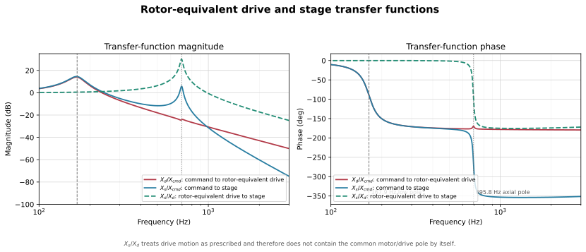
For the frictionless two-DOF linear model define
and \(\Delta(s)=a(s)d(s)-b(s)^2\). The three relevant transfer functions are
\(X_d/X_{cmd}\) is the clearest view of the low rotor/drive pole. \(X_s/X_{cmd}\) contains both plant poles but can show weaker low-mode participation. \(X_s/X_d\) treats rotor-equivalent drive motion as a prescribed input, so the common motor/magnetic pole cancels and only the stage-following dynamics remain. Therefore rotor-to-stage alone cannot be used to prove that the lower mode is absent.
The panel below is computed in the browser. Changing lead, component inertias, screw geometry, holding torque, detent torque, or plant parameters updates the derived values and these curves. Static SVGs still require a Python rebuild.
Enabled detent torque and its linearization
The published \(\hat T_{det}=0.005\) N·m is enabled in the nonlinear simulation:
Around an equilibrium \(\theta_0\), it contributes the position-dependent tangent stiffness
The report origin uses \(\phi_{det}=0\), a stable detent equilibrium. Its current tangent is \(K_{det}=\) N/m, but that value is used only for a local sensitivity calculation. It is not placed on the drive diagonal of the global stiffness matrix.
The global model therefore has \(X_s/X_{cmd}|_{s=0}=1\) in Case 0. A local perturbation about one detent minimum may temporarily use \(K_m+K_{det}(x_0)\) on the drive diagonal while retaining \(K_m\) in the command vector. That approximation is useful only over roughly \(\pm0.4\ \mu\)m, where the detent sine remains near its tangent. Over multiple microsteps the tangent changes sign and the nonlinear periodic torque must be used.
Balancing commutation and detent torque gives the worst-case drive-only bound
Its spatial period is one full step, \(p_{step}=5.00\ \mu\)m, because \(\sin(4N_r\theta)\) repeats after \(2\pi/(4N_r)=1.8^\circ\). The earlier quarter-step statement confused the four detent cycles per rotor-tooth pitch with the 1.8° full-step interval. The 266 nm equilibrium-error amplitude remains correct. Compliance and friction modify the realized stage error, but the periodic term must not be absorbed into friction identification.
Detent alone is not the whole “stepper resonance” mechanism. Current-loop dynamics, back-EMF, driver delay, current quantization, and mechanical damping set the response amplitude and stability. A higher-fidelity model still needs detent phase, an identified damping ratio, and current-controller states.
The model-scope audit finds a global Hz drive mode, a 136.93–193.63 Hz local detent-tangent range, and a Hz relative mode. These overlap the broad measured bands but do not reproduce every reported feature. The evidence limits and minimum defensible model extensions are moved to Appendix F, keeping this chapter focused on the equations that are implemented.
6. Reduction from ten DOFs to two
6.1 What the reduction must preserve
The reduced plant must preserve the motor-equivalent motion \(x_d=r\theta_m\), the measured stage motion \(x_s\), the static endpoint compliance, and the two retained resonances. It must also preserve the relative velocity \(\dot x_d-\dot x_s\): that is the power-conjugate velocity of the nut microslip port and is required by both friction identification and pre-distortion. Any one-DOF route fails this gate before numerical accuracy is considered.
The reduction is valid only over a declared retained band. Internal coordinates may be eliminated when their fixed-interface modes remain outside that band and their inertial participation is small. The live mass diagnostics are \(m_d/m_s=\) and \(\mu=\) kg, so the drive side is order \(10^2\) heavier after reflection and the relative-mode mass is 99.6% of \(m_s\).
6.2 Reduction approaches
The six approaches answer different validation questions. The first three are mathematically equivalent for this unbranched static load path; the remaining three test frequency-dependent damping, truncation error, and experimental identifiability.
| No. | Approach | What it validates | Detailed derivation |
|---|---|---|---|
| 1 | Formal static condensation | The two retained coordinates and exact static endpoint relation follow from the ten-DOF matrices | Appendix E.2 |
| 2 | Direct series-compliance reduction | The same result follows from equal force, summed compliance, and reflected/co-moving inertia | Appendix E.3 |
| 3 | Bond-graph reduction | The transformer and friction power ports survive without double-counting efficiency loss | Appendix E.4 |
| 4 | Frequency-domain complex-stiffness reduction | Interface damping can be propagated to a local \(k_{ax}+i\omega c_{ax}\) equivalent | Appendix E.5 |
| 5 | Craig–Bampton convergence check | Restoring the first discarded fixed-interface mode bounds dynamic truncation error | Appendix E.6 |
| 6 | Measured-FRF identification | Modal mass and half-power bandwidth can independently determine executable stiffness and damping | Appendix E.7 |
All analytical approaches retain
The reflected torsional branch is 0.489 nm/N of about 130 nm/N total compliance: %, not 0.004%. The static-condensation, direct-compliance, and bond-graph results agree because \(k_{ball}\) is presently closed from the same calibrated chain; that agreement validates the reduction algebra, not the component measurements.
6.3 Reduction evidence
The comparison is outcome-oriented: it asks whether the 2-DOF model preserves the required motions, compliance, modes, damping behavior, and friction port.
| Validation question | Evidence | Interpretation |
|---|---|---|
| Are the endpoint compliance and 696 Hz relative mode preserved? | Approaches 1–3 give \(k_{ax}=\) MN/m and \(f_2=\) Hz. | Yes, for the calibrated component chain. |
| Is the first omitted internal mode dynamically important? | Craig–Bampton gives Hz; its difference from the full model is %. | The structural truncation is small in the retained band. |
| Does a single assumed damper reproduce the full model? | The current 55 N·s/m 2-DOF link settles in ms; interface propagation, Craig–Bampton, and the full model give , , and ms. | Yes, to within 18% in settling time, once the interface loss factors are converted correctly. The remaining gap is not resolvable without the E.7 measurement. |
| Does damping assignment or coordinate truncation dominate the residual? | The Section 7 per-plant audit drives all five candidate plants against the same ten-DOF output: every two-coordinate plant carrying a defensible damping value lands within 0.5% of the same residual, while restoring one eliminated coordinate divides it by 9.9. | Coordinate truncation dominates, and with the damping estimates now agreeing this is a clean one-variable result rather than an inference across two confounded variables. |
| Is the mass/stiffness pair independently identified? | BOM closure implies \(k_{ball}=\) MN/m; the measured 0.600 kg modal-mass branch implies MN/m and settles in ms. | No. The modal mass or component stiffness must be remeasured. |
| Is the nut-microslip coordinate retained? | Every 2-DOF approach preserves \(\dot x_d-\dot x_s\) and its equal-and-opposite force row. | Yes; a one-DOF lock would fail this gate. |
6.4 Decision and residual risk
Use the direct series-compliance argument as the concise derivation, formal static condensation as its proof, the bond graph as the power-port audit, and Craig–Bampton as the truncation check. Use the frequency-domain complex-stiffness result for analytical damping propagation. Adopt the measured-FRF values only after modal mass and half-power bandwidth are confirmed.
The 2-DOF structure is validated, and its executable damping is now consistent with the ten-DOF assembly to 18% in settling time rather than an order of magnitude. Section 7 is therefore a structural comparison between two comparably damped plants, and its residual is a truncation measurement. The active risks are the 0.405-versus-0.600 kg mass conflict, the still-unmeasured interface loss factors, constrained bearing stiffness, position-dependent screw stiffness, and detent-dominated settled error.
7. Full-versus-reduced verification
Answers. Can coordinates stand in for ?
The number. % command RMS, or nm.
Why it matters. About % of the residual is removed by correcting a % drive-pole error, versus % from retained-frequency alignment and % from damping. Coordinate truncation dominates.
What it is not. Model agreement is not hardware accuracy.
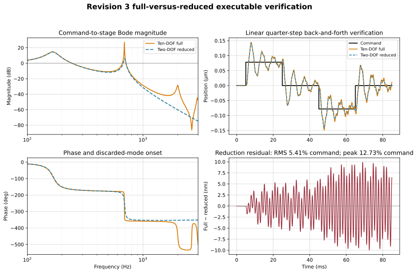
The comparison is deliberately global-linear and frictionless so that it isolates structural reduction from friction memory and the position-dependent detent tangent. Both models receive the same zero-order-held sequence: 0 → +5 µm → 0 → −5 µm → 0. This is one physical full-step pitch and ends at its starting level. Because the audit is linear, changing from one 1/16 pre-distortion subdivision to one full step scales all displacements by 16 while leaving the normalized reduction error unchanged.
The full model includes every discarded internal resonance, including modes above the 3 kHz plot limit. This is a reduction and numerical-convergence check, not independent modal validation or a nonlinear actuator prediction. The same measured 690 Hz feature sets \(k_{ax}\) and is then reproduced approximately by the reduced model. See Appendix A for the carriage-position stiffness sweep.
7.1 Solver convergence
The time-domain comparison now uses the physical 5.000 µm full-step pitch. Because both verification plants are linear, this rescales the displacement and residual in nanometres but does not change the normalized RMS or peak percentages.
| RK4 step \(h\) | Points/cycle at 2002.0 Hz | Maximum \(\lvert R(h\lambda)\rvert\) | Result | RMS residual | Peak residual |
|---|---|---|---|---|---|
| 25.00 µs | 20.0 | 2.882548 | unstable | not reportable | not reportable |
| 12.50 µs | 40.0 | 0.999283 | stable | 99.567 nm (1.99134%) | 245.618 nm (4.91237%) |
| 6.25 µs | 79.9 | 0.999642 | stable | 99.570 nm (1.99140%) | 245.619 nm (4.91238%) |
| 2.50 µs | 199.8 | 0.999857 | stable | 99.572 nm (1.99144%) | 245.619 nm (4.91238%) |
The 25 µs result is not a coarse but usable answer: it is mathematically unstable for this ten-DOF state matrix. The unplotted full model reaches 21.32 kHz, and the largest RK4 amplification magnitude is greater than one. The 12.5, 6.25, and production 2.5 µs results converge to the same output residual, so the inter-edge growth below is not integration drift.
Both static gains are unity to numerical precision (\(G_{full}(0)=1.000000000000\) and \(G_{red}(0)=1.000000000000\)), and the residual is zero before the first edge. The four successive inter-edge peak magnitudes are 191.0, 213.0, 225.4, 245.6 nm. The strongest residual spectral energy is near 162.5 Hz; the visibly faster ripple is near 2012.4 Hz.
The residual is not explained by the 2002.0 Hz ripple alone. That full-model mode has \(\zeta=0.01257\) and retains only 4.2% of its amplitude over the 20 ms edge spacing. It is also the pole that sets the timescale-separation ratio used in Appendix E.8.2: \((695.82/2002.0)^2=0.121\). The retained upper mode carries some of the rest: the full model has 690.9 Hz with \(\zeta_2=0.01321\) against the reduced model's 695.8 Hz with \(\zeta_2=0.01569\), the two damping ratios differing by 19%. The two plants now agree about how fast that mode decays, so what remains is not a damping inconsistency.
The peaks still climb, by a factor of 1.29 across the four edges, and no single-mode carryover argument reproduces that. The upper mode retains 31.8% of its amplitude over the 20 ms edge spacing, which would cap the accumulation at 1.47; the drive pole, which the per-plant audit below identifies as the dominant residual line, retains only 12.8% at \(\zeta_1=0.0981\) and would cap it at 1.15. Matching the observed 1.29 from the drive pole alone would need \(\zeta_1\approx0.072\) against the executed 0.0981. The growth is therefore bounded and modest but is not attributed to one mode here: it is a difference signal between two plants whose poles differ in frequency as well as amplitude, and a scalar carryover argument does not apply to it.
7.2 Per-plant residual audit
Every Section 6 candidate is driven with the same command and differenced against the same ten-DOF stage output at the production 2.5 µs step. The damping question and the truncation question are then separated by measurement instead of inference.
| Reduced plant | Coordinates | Damping basis | \(f_1\) (Hz) | \(\zeta_1\) | \(f_2\) (Hz) | \(\zeta_2\) | RMS residual | Peak residual |
|---|---|---|---|---|---|---|---|---|
| Formal static condensation | 2 | assumed 55 N·s/m link damper | 167.86 | 0.0998 | 695.82 | 1.569e-02 | 99.572 nm (1.991%) | 245.619 nm (4.912%) |
| Frequency-domain complex stiffness | 2 | interface loss factors propagated to \(c_{ax}\) | 167.86 | 0.0998 | 695.85 | 1.340e-02 | 99.089 nm (1.982%) | 251.255 nm (5.025%) |
| Measured-FRF identification | 2 | 0.600 kg modal mass and measured \(\zeta\) | 167.70 | 0.0997 | 697.90 | 1.552e-03 | 156.051 nm (3.121%) | 412.222 nm (8.244%) |
| Craig–Bampton, condensed to two coordinates | 2 | Craig–Bampton frequency and damping, two coordinates | 167.86 | 0.0998 | 691.74 | 1.345e-02 | 84.601 nm (1.692%) | 195.971 nm (3.919%) |
| Craig–Bampton, three coordinates | 3 | damping projected from the ten-DOF matrices | 166.97 | 0.0981 | 691.74 | 1.334e-02 | 10.039 nm (0.201%) | 22.946 nm (0.459%) |
| Ten-DOF reference | 10 | element-wise \(\eta_j\) | 166.95 | 0.0981 | 690.87 | 1.321e-02 | - | - |
Every plant in the table has unity static gain, so none of the residual is a compliance error.
Damping assignment is now nearly irrelevant to the residual. The executed plant and the interface-propagated plant differ in \(\zeta_2\) by only a factor of 1.17, and their RMS residuals differ by 0.5%. The measured-mass plant is the exception at 57% worse, and it is worse precisely because its \(\zeta_2\) is set by the separately assumed measured relative damping rather than by the interface loss factors, leaving it an order of magnitude underdamped against the ten-DOF plant. Coordinate content does the rest: the 2-DOF plant rebuilt at the Craig-Bampton frequency of 691.74 Hz drops the RMS residual to 84.6 nm, and restoring one eliminated coordinate drops it to 10.0 nm, a factor of 9.9 below the executed plant.
With the damping question removed, coordinate truncation is what is left. Every two-coordinate plant that carries a defensible damping value lands within 0.5% of the same residual, and only adding a coordinate moves it, by a factor of 9.9. This is the measurement behind the Section 6.3 row, and it is now a clean one-variable result rather than an inference drawn across two confounded variables.
The \(f_1\) column locates the error, and it is not where the section previously looked. The strongest residual line has moved to 162.5 Hz, near the drive pole rather than near the axial mode. Every two-coordinate plant places that pole at 167.86 Hz against the ten-DOF value of 166.95 Hz, a 0.54% error that static condensation cannot remove because it is a dynamic-participation effect, not a static-stiffness one. Restoring one fixed-interface coordinate corrects it to 166.97 Hz, within 0.007%. The decomposition is therefore explicit: damping assignment is worth 0.5%, aligning the upper mode is worth 15%, and correcting the drive pole is worth a further 75%; the last 10% is removed by none of the three and is the residual the three-coordinate plant still carries. This also prices the one assumption that E.3 could previously only bound: dropping the eliminated axial inertia costs half a percent on the drive pole, and that half percent is now the largest single term in the reduction residual.
7.3 Dwell consequence
The ten-DOF upper mode now implies a 2% settling time of 69.8 ms, against 58.3 ms for the reduced plant. Section 11 runs its nonlinear campaign on a 100 ms plateau dwell, set by the maximum of the 100 ms floor, the 46.4 ms detent-softened drive estimate, and the 58.3 ms reduced axial-mode estimate. That floor is adequate: it exceeds the axial-mode settling time by a factor of 1.4, so the settled-window statistics are collected after the 691 Hz mode has decayed. The earlier finding that the dwell was short by a factor of six was a consequence of the understated interface loss factors and does not survive their correction.
7.4 Reading the trajectory
The large oscillation is expected inside this deliberately frictionless, global-linear audit, but it is not a quantitative prediction of a real repeated full-step move. One full step changes the electrical equilibrium by 1.571 rad (90°). Applying the small-signal magnetic tangent across that entire jump initially requests 1.571 times the sinusoidal force limit. The ideal zero-rise-time edge also injects energy into every retained and discarded mode, while friction, detent nonlinearity, current-loop bandwidth, current rise, and torque saturation are absent.
Accordingly, the top-right panel should be read as an amplitude-scaled structural comparison: do the two mathematical plants react alike to the same broadband edge? A physically predictive full-step trajectory requires applying the nonlinear magnetic force and driver/current dynamics to the full-order plant. The normalized reduction residual remains useful, but the absolute overshoot in this linear panel should not be interpreted as expected stage motion.
8. Friction constitutive laws
Answers. Where do the friction laws attach, and what can the current model distinguish?
The number. ports; GMS states per site versus LuGre state.
Why it matters. There are structural identifiability results: rotor/drive drag cannot be separated, and \(k_{ax}\) versus \(\sigma_{0,n}\) cannot be separated in small signal.
What it is not. Provisional does not mean nothing is identified.
8.0 How the friction laws attach to the plant
The plant is the two-DOF reduced model with mechanical state \([x_d,x_s,\dot x_d,\dot x_s]\). Each friction site is a scalar port defined by a row \(\mathbf H_\alpha\) that maps plant velocity to a single sliding velocity, and the site force is applied back as \(-\mathbf H_\alpha^TF_{f,\alpha}\). The constitutive law inside the port is interchangeable: LuGre carries one state per site, GMS carries four.
| Site | Row \(\mathbf H_\alpha\) | Driving velocity \(v_\alpha\) | Applied generalized force |
|---|---|---|---|
| Guideway \(g\) | \([0,1]\) | \(\dot x_s\) | \([0,-F_{f,g}]^T\) |
| Nut microslip \(n\) | \([1,-1]\) | \(\dot x_d-\dot x_s\) | \([-F_{f,n},+F_{f,n}]^T\) |
| Lumped drive side \(d\) | \([1,0]\) | \(\dot x_d\) | \([-F_{f,d},0]^T\) |
The minus-transpose rule guarantees dissipated power \(\dot{\mathbf x}^T(-\mathbf H^TF_f)=-vF_f\le0\) when the constitutive force opposes motion. Appendix B draws the same rows as power bonds and E.4 names the junction each one sits on; the rows are not repeated anywhere else.
Standing constraint: the lead-screw transformer carries no efficiency term. All lead-screw losses are represented by the drive-port law \(F_{f,d}\) acting on \(\dot x_d\). Introducing an efficiency multiplier into the transformer would represent the same dissipation twice and would corrupt every identified friction parameter. eta_screw exists only to estimate \(F_{s,d}\) in 8.2, and for nothing else.
What physically sits on each port row
A reader cannot identify a parameter without knowing which hardware it stands for. Every contributor below names the parameter that carries it.
Guideway port, \(\mathbf H_g=[0,1]\), driven by \(\dot x_s\). Identified by case A/A2 in 9.4. No gravity term: the axis is horizontal.
| Contributor | Enters as | Where parametrised |
|---|---|---|
| Ball-raceway rolling resistance, four MNN9-G1 carriages at V1 preload | g_Fc | 8.2 friction table |
| Carriage seal and wiper drag | g_Fc | 8.2 |
| Ball recirculation entry and exit losses | g_Fc | 8.2 |
| Presliding microslip in the Hertzian ball-raceway contacts | g_sigma0, split into g_k1..4 by gms_nu1..4 | 8.2, yield distances in 8.2 |
| Stribeck rise from boundary to mixed lubrication | g_Fs, g_vs, stribeck_delta | 8.2 |
| Lubricant shear in the raceways | g_sigma2 | 8.2 |
| Drag from any cabling routed to the moving stage | g_Fc | 8.2, not separately identified |
Nut microslip port, \(\mathbf H_n=[1,-1]\), driven by \(\dot x_d-\dot x_s\). Identified by case B/B2 in 9.4.
| Contributor | Enters as | Where parametrised |
|---|---|---|
| Partial slip inside the ball-raceway contact ellipses before gross rolling begins | n_sigma0, split into n_k1..4 | 8.2 |
| Nonlocal presliding memory across the four element yield thresholds | gms_nu1..4, yield distances \(d_{i,n}\) | 8.2 |
| Stribeck level bounding the microslip force | n_Fs, n_Fc, n_vs | 8.2 |
| Micro-viscous and lubricant shear across the port | n_sigma2 | 8.2 |
Explicitly not on this row. The gross rolling resistance of the screw is on \(\mathbf H_d\). The axial elastic compliance of the screw shaft and support is \(k_{ax}\), which is conservative and is not a friction term at all; \(\sigma_{0,n}\) and \(k_{ax}\) are indistinguishable at small signal, which is why the blocked-stage fixture in Section 9 exists.
Drive port, \(\mathbf H_d=[1,0]\), driven by \(\dot x_d\). No case isolates this port: A/A2 excites \(d\) together with \(g\), and B/B2 excites \(d\) together with \(n\).
| Contributor | Enters as | Where parametrised |
|---|---|---|
| Preloaded ball-nut drag torque, from the zero-axial-play "O" designation. Dominant term | d_Fs, d_Fc | 8.2, magnitude derived there |
| Barden duplex angular-contact pair preload starting torque | d_Fs | 8.2 |
| Motor rotor bearings, two per motor | d_Fs | 8.2 |
| Nut seal and wiper drag against the screw | d_Fc | 8.2 |
| Screw ball recirculation losses | d_Fc | 8.2 |
| Motor iron losses: eddy-current and hysteresis drag, velocity proportional | d_sigma2 | 8.2, currently no stated basis |
| Lubricant churning in the nut and bearings | d_sigma2 | 8.2 |
| Presliding of the bearing and nut contacts before gross rotation | d_sigma0, split into d_k1..4 | 8.2 |
Explicitly not on this row. Detent torque is conservative and position dependent, is modeled separately, and must not be folded into d_Fs; see 9.5. The applied magnetic force is a source term, not a friction term: both act on \(x_d\), but one injects power and the other removes it.
Merged laws. The former rotor-drag law \(F_{f,r}\) and \(F_{f,d}\) shared this row and were perfectly correlated. They are one law now; the table still names both physical groups so a reader can price them separately when identifying.
A third structural identifiability result follows from the rows, and it constrains the experiment rather than the model. In steady motion \(\dot x_d=\dot x_s\), so the guideway and drive ports see the same velocity and the drive must overcome their sum: \(F_g\) and \(F_d\) are near-perfectly correlated in any constant-velocity or rigid-body experiment. Transients separate them in principle, but the difference is micrometre scale and poorly conditioned, so separation requires measuring the guideway in isolation before the screw is coupled. The useful half of the same observation is that in steady motion the nut-port velocity \(\dot x_d-\dot x_s\) is exactly zero, because the elastic deformation is constant and every nut element is stuck. Constant-velocity sweeps therefore identify \(F_g+F_d\) with the nut port silent, and reversal experiments identify the nut port against two already-known ports. This is also why the 13.2 census records zero threshold flips at the nut site.
What RK4 advances:
| Block | States | Count |
|---|---|---|
| Mechanical | \(x_d\), \(x_s\), \(\dot x_d\), \(\dot x_s\) | 4 |
| LuGre site, cases A/B/C | \(z_\alpha\) | 1 per active site |
| GMS site, cases A2/B2/C2 | \(F_1\ldots F_4\) per site | 4 per active site |
Friction states are integrated together with the mechanical states in the same RK4 vector; the memory is never evaluated afterward as a plotting correction. Cases A/A2 activate \(d,g\); B/B2 activate \(d,n\); C/C2 activate all three identifiable sites; case 0 has no friction state.
Two structural consequences of the rows, and what the choice of law changes
\(F_{f,r}\) and the former \(F_{f,d}\) shared the row \([1,0]\) and were therefore perfectly correlated in every experiment this reduced model supports, so they are now one identifiable drive-side law \(F_{f,d}\); physical bookkeeping may still name the sources, but the case map does not claim to separate them. For the same structural reason the presliding tangent cannot separate \(k_{ax}\) from \(\sigma_{0,n}\), because both enter the differential stiffness as the identical outer product \([1,-1]^T[1,-1]\) — separation needs finite-amplitude B/B2 reversal data, where microslip yields and dissipates while \(k_{ax}\) stays conservative.
Choosing LuGre or GMS inside a port changes the reversal loop and the settled error while leaving the small-signal stiffness, and therefore the modal frequencies, nearly unchanged: GMS retains non-local memory through separately yielding elements, LuGre has one local bristle state. Friction can add damping at some amplitudes but can also produce stick–slip, lost motion, amplitude-dependent apparent stiffness, and nonzero final error, none of which is inferable from the linear Bode curve.
8.1 Constitutive laws
At each active site the Stribeck level is
LuGre derivation used in A, B, and C
The average bristle displacement \(z\) evolves as
and the friction output is
Near rest, \(\dot z\approx v\) and \(F_f\approx\sigma_0z+(\sigma_1+\sigma_2)v\), so the frequency-response linearization adds \(\sigma_0\) stiffness and \(\sigma_1+\sigma_2\) damping along the site’s velocity vector.
GMS derivation and corrected slip-attractor sign used in A2, B2, and C2
Four parallel elements carry force states \(F_i\). While an element sticks,
Once it yields in the current direction, the stable slip branch is
Its equilibrium is \(F_i=\operatorname{sgn}(v)\nu_i s(v)\) and the derivative points back toward that equilibrium on either velocity sign. Writing an extra \(\operatorname{sgn}(v)\) outside the entire bracket makes the negative-velocity branch repelling; that was the sign defect corrected in the Revision 2 work and is not repeated here.
The output is
The element force fractions and stiffnesses are normalized so that
The builder verifies both identities before any simulation or rendering starts. It aborts rather than silently renormalizing an inconsistent parameter set. Therefore the element breakaway forces sum to the site Stribeck force and the stuck elements sum to the specified aggregate presliding stiffness.
On reversal the affected element returns to the stuck branch. Different \(k_i\) and \(\nu_i\) create different yield distances and preserve non-local presliding memory.
Exact re-stick test and derivative-evaluation ordering
Every Runge–Kutta evaluation first forms \(v_g=\dot x_s\), \(v_n=\dot x_d-\dot x_s\), and \(v_d=\dot x_d\) from the current mechanical velocities, then advances each active site's law and applies its force through the row of 8.0.
Each GMS call is evaluated from the current Runge–Kutta trial state in this order:
- Read the current site velocity \(v\) and element forces \(F_i\); compute \(s(v)\), the thresholds \(\nu_i s(v)\), and \(k_i\).
- If \(|v|\le10^{-14}\) m/s, hold every element state with \(\dot F_i=0\). No branch transition is inferred from a zero-velocity sign.
- Otherwise evaluate the reversal/re-stick predicate before assigning a derivative: \(vF_i\le0\). If true, select the stuck derivative \(\dot F_i=k_iv\).
- If it is not a reversal, test the current-state yield condition \(|F_i|<\nu_i s(v)\). A sub-threshold element also receives \(\dot F_i=k_iv\).
- Only when neither test is true is the stable slip-attractor derivative evaluated.
- Compute the friction output from the unadvanced trial-state forces, \(F_f=\sum_iF_i+\sigma_2v\), and return all derivatives to RK4. RK4 then forms its next trial state and repeats every test.
Thus a derivative never selects its own branch during the same evaluation. There is no event localization at the threshold crossing. Branch switching uses the RK trial grid, so Section 13 includes a time-step check.
8.2 Executed provisional friction values
Element yield distances \(d_i=\nu_i s/k_i\) make the parameter table readable without a calculator. Values are µm and update live.
| Site | Level | \(d_1\) | \(d_2\) | \(d_3\) | \(d_4\) | \(d_4/d_1\) | \(F_s/\sigma_0\) |
|---|---|---|---|---|---|---|---|
| Guideway \(g\) | \(s=F_s\) | ||||||
| Guideway \(g\) | \(s=F_c\) | ||||||
| Nut microslip \(n\) | \(s=F_s\) | ||||||
| Nut microslip \(n\) | \(s=F_c\) | ||||||
| Drive side \(d\) | \(s=F_s\) | ||||||
| Drive side \(d\) | \(s=F_c\) |
The guideway's fourth element does not yield until 15.8 µm, more than three full steps at the 5 µm pitch. For single-step and few-step moves elements 3 and 4 never reach gross slip, so the simulated output is dominated by presliding. Two consequences follow. This supports the premise that presliding compensation is the relevant mechanism for this axis. And \(F_c\) and \(v_s\) are close to unidentifiable from single-step data, because no part of that data reaches the gross-sliding branch, so identification requires a separate constant-velocity sweep.
The yield span \(d_4/d_1\) is 16.0 at every site because the \(\nu_i\) and \(k_i\) ratios are exact mirrors, \([0.10,0.20,0.30,0.40]\) against \([0.40,0.30,0.20,0.10]\). That identical span is a construction convenience, not a physical property of three different contacts: a rolling guideway and a preloaded ball nut have no reason to share a normalized presliding shape, and breaking the mirror at any one site would give it a different span without changing anything else in the model. A spread of this order is what gives the Maxwell-slip stack distinct yield points; a spread near unity would collapse the model toward a single Jenkins element with no non-local memory left to distinguish it from LuGre.
Friction and GMS entry parameters
| Site | \(\sigma_0\) | \(\sigma_1\) | \(\sigma_2\) | \(F_s\) | \(F_c\) | \(v_s\) | derived \(C\) (N/s) |
|---|---|---|---|---|---|---|---|
| Guideway | |||||||
| Nut microslip \(n\) | |||||||
| Lumped drive side \(d\) |
Shared parameters:
| Symbol | Meaning | Value | Unit |
|---|---|---|---|
| \(\delta\) | Stribeck exponent | – | |
| \(\tau_C\) | Stribeck relaxation time, shared across sites | s | |
| \(\eta_{screw}\) | screw efficiency, provenance estimate only | – | |
| \(F_{preload,n}\) | ball-nut preload, provenance estimate only | N |
\(\delta\) controls how sharply the Stribeck level falls with speed; 2.0 is the conventional Gaussian form and it is fixed rather than identified in the present work. It executed at 1.0 in the previous revision, where it was never surfaced in any parameter table, so exposing it changed every nonlinear result; see Appendix C item 14. \(\tau_C\) replaces three independent \(C\) values, as described in 8.3.
\(\sigma_1\) is zero by design, not by omission. It is set to zero at every site so that LuGre and GMS contribute the identical tangent damping \(\sigma_2\mathbf H^T\mathbf H\) and the A/A2 comparison isolates memory structure. The former values, 3.0, 5.0, and 9.0 N·s/m, are restored by case A1v.
These force levels are provisional and several are suspect. They are not silently corrected, because replacing one guess with another hides the uncertainty:
| Parameter | Executed | Likely range | Basis |
|---|---|---|---|
g_Fs | 3.0 N | 1.0 to 1.5 N | four MNN9 carriages at V1 preload give roughly 0.2 to 0.7 N rolling plus 0.4 to 0.8 N seal drag. Kamenar and Zelenika measured breakaway up to 0.9 N on a comparable Schneeberger Minirail MN7 stage |
g_Fc | 2.4 N | scale with g_Fs at 0.80 | ratio preserved until measured |
d_Fs | 7.0 N | 6 to 35 N | 7.0 N is only mN·m. A preloaded zero-axial-play ball nut alone plausibly contributes 0.9 to 5.6 mN·m, which reflects to 6 to 35 N. The executed value sits at the bottom of the range |
d_sigma2 | 0.45 N·s/m | no number yet | should absorb motor eddy-current and hysteresis drag, which is velocity proportional. Currently has no stated basis |
⚠️ Do not fold detent into d_Fs. Detent at 5 to 15% of the 60 mN·m holding torque reflects to 19 to 57 N, larger than every friction term on the drive port combined. It is conservative and position dependent, is modeled separately, and must stay that way. Any breakaway measurement on an assembled motor captures both at once; see 9.5.
Estimating d_Fs from screw efficiency gives \(F_{f,d}=F(1/\eta-1)=\) N at the entered preload and efficiency. For a preloaded nut under light external load, \(F\) is the nut preload, not the payload, which is why the drive port is large in this system despite the light stage. If the manufacturer quotes a no-load drag torque \(T_0\) for the KGT-F1-08-01, use \(F_{s,d}=T_0/r\) directly and skip the efficiency estimate. This estimate never touches the transformer.
The four executed GMS elements use shared force fractions \(\nu_i\) and site-scaled stiffnesses \(k_i\):
| Element \(i\) | Force fraction \(\nu_i\) | Guideway \(k_{i,g}\) | Nut \(k_{i,n}\) | Lumped drive \(k_{i,d}\) |
|---|---|---|---|---|
| 1 | ||||
| 2 | ||||
| 3 | ||||
| 4 | ||||
| Executed sum | 1.00 | \(7.600\times10^5\) | \(2.000\times10^6\) | \(3.000\times10^6\) |
These values support comparison, but still require identification.
8.3 Implementation choices
Four properties of the executed code are decisions, not properties of the published GMS model. They are listed so a reader can tell which is which.
| Choice | Canonical GMS | This implementation | Why it matters |
|---|---|---|---|
| Branch state | persistent per-element stick/slip flag | reconstructed each RK call from \(vF_i\le0\) and \(\lvert F_i\rvert<\nu_is(v)\) | a rising Stribeck level during deceleration can reclassify a slipping element as stuck without a velocity reversal |
| Element fractions | \(\nu_i\) identified per contact | one shared \(\nu_i\) set, site-scaled \(k_i\) | forces an identical normalized presliding shape at guideway, nut, and drive |
| Stiffness closure | \(k_i\) independent | \(\sum_ik_i=\sigma_0\) | makes LuGre and GMS share a small-signal tangent so A/A2 is controlled; propagates the \(\sigma_0\)-versus-\(k_{ax}\) non-identifiability into all four elements |
| Tangent damping | \(\sigma_1\) identified per contact | \(\sigma_1=0\) in A/B/C, restored in A1v | the closure equalizes stiffness but not damping; zeroing \(\sigma_1\) is what makes the controlled claim true rather than approximate |
| Attractor rate | \(C\) identified from measured loops | \(C_\alpha=(F_{s,\alpha}-F_{c,\alpha})/\tau_C\), one shared \(\tau_C\) | one relaxation time replaces three unanchored N/s constants |
| Switching | event localization at the threshold crossing | RK trial grid only | RK4 does not retain fourth order across a switching surface; expect an observed order near one to two |
Branch state: what the stateless test does differently
During deceleration \(|v|\) falls and \(s(v)\) rises from \(F_c\) toward \(F_s\), so every threshold \(\nu_is(v)\) rises with it. An element slipping at \(F_i\approx\nu_is(v_{high})\) can then satisfy \(|F_i|<\nu_is(v_{low})\) and be assigned the stuck derivative \(k_iv\) instead of the slip attractor, with no velocity reversal anywhere. A persistent-state model would keep the element slipping and let it chase the rising threshold at rate \(C\).
This is exactly the deceleration-into-stop regime that the settled-window statistics measure, so the departure cannot be dismissed as a corner case on inspection. Section 13.2 counts it, prices it against the reported metric, and shows why the 1/256 and production 1/16 conclusions differ.
Element fractions: one \(\nu_i\) set for three different contacts
Four-carriage rolling guideways and a preloaded ball nut are not expected to have the same normalized presliding curve, so tying them biases identification toward whichever site dominates the fitting residual. The assumption reduces twelve element parameters to four fractions plus three site scale factors, which is why it is made; it is not a physical claim and should be released once any single site has been identified independently.
Stiffness closure: why \(\sum_ik_i=\sigma_0\) is imposed
The closure exists to make the A/A2, B/B2, and C/C2 comparisons controlled: with it, LuGre and GMS share the same zero-velocity presliding stiffness, so a difference in the plotted response is not a stiffness difference. The cost is that it carries an existing identifiability problem into all four elements. As 8.0 notes, \(\sigma_{0,n}\) and \(k_{ax}\) enter the differential stiffness as the same outer product \([1,-1]^T[1,-1]\) and cannot be separated by the presliding tangent; fixing \(\sum_ik_i\) to \(\sigma_0\) means that ambiguity now sets all four \(k_{i,n}\) as well.
The closure alone does not equalize tangent damping, and this was previously claimed too broadly. LuGre contributes \((\sigma_1+\sigma_2)\mathbf H^T\mathbf H\) while GMS contributes only \(\sigma_2\mathbf H^T\mathbf H\). At the former \(\sigma_1\) values that was a factor of 8.5 to 21:
| Site | LuGre \(\sigma_1+\sigma_2\) | GMS \(\sigma_2\) | Ratio |
|---|---|---|---|
| Guideway | 3.40 N·s/m | 0.40 | 8.5× |
| Nut microslip | 5.25 | 0.25 | 21× |
| Drive side | 9.45 | 0.45 | 21× |
For scale, the nut port's 5.25 N·s/m sat against \(c_{ax}\approx55\) N·s/m, roughly 10% of the relative mode's damping. Setting \(\sigma_1=0\) in A/B/C removes the asymmetry outright, so both laws now contribute exactly \(\sigma_2\mathbf H^T\mathbf H\) and the controlled claim holds as written. Case A1v restores the former values so micro-viscous damping can be studied as its own effect. B1v and C1v are not executed; they differ only in which ports are active and the effect is identical in kind.
What \(C\) represents and why it is not a numerical constant
\(C\) has units of N/s and sets the rate at which a yielded element relaxes toward \(\nu_is(v)\). A single value shared across sites therefore means different relaxation times wherever the force scale differs, which is why the executed 5000 N/s previously gave 0.120 ms at the guideway, 0.080 ms at the nut, and 0.300 ms at the drive side with no stated reason for the spread.
The executed parameterization removes that arbitrariness by declaring the time constant instead of the rate:
The executed \(\tau_C\) is ms, shared across all sites, so the three relaxation times are equal by construction rather than by coincidence.
\(\tau_C\) is bounded from above by the structure. The retained mode has a period of ms, and the executed \(\tau_C\) is times faster; if it approaches the mode period the attractor dynamics alias into the structural response. Below roughly 0.05 ms it stiffens the ODE without adding physics. \(C\) is therefore dynamically active and participates in the structural response — it is not a smoothing parameter that can be set arbitrarily large.
In the original GMS work \(C\) is identified from measured hysteresis loops. It is assumed here and is the least anchored parameter in Section 8. Section 13.3 measures what that assumption is worth.
Switching: what the step-halving check can and cannot show
Because branch transitions are resolved on the RK trial grid with no event localization, the step-halving study in 13.1 is expected to show an observed order below four. That is the correct behaviour for a hybrid system integrated this way, not a convergence defect, and the table there should be read as a sensitivity check rather than an order verification.
Linear Bode implementation versus nonlinear stepping implementation
A nonlinear hysteretic law has no single amplitude-independent Bode response. The displayed Bode curves use the zero-velocity presliding tangent. For each active site,
LuGre adds tangent damping \((\sigma_1+\sigma_2)\mathbf H^T\mathbf H\); the present GMS tangent adds \(\sigma_2\mathbf H^T\mathbf H\), while its four elastic states supply the presliding stiffness. With \(\sigma_1=0\) these are equal and the two curves differ only through the memory structure. Restoring the former \(\sigma_1\) values, as case A1v does, makes LuGre's tangent damping 8.5× the GMS value at the guideway and 21× at the nut and drive ports, so the asymmetry is large whenever \(\sigma_1\) is nonzero. The time-domain plots use the complete nonlinear state equations, including Stribeck variation, yielding, and reversal memory.
9. Force-instrumented partial-slip memory experiment
Answers. Which experiment can distinguish the constitutive laws?
The number. GMS \(F_{ret}\) is × the LuGre value.
Why it matters. Non-closure on repeated returns is the constitutive-memory signature.
What it is not. This is not a claim that either law is better; force is the discriminator because displacement is near the nm project ADEV floor.
The main sequence spans yield but does not revisit nested reversal points. A/A2 therefore keeps the normal free-stage plant; G/G2 repeat it with only the drive friction port ablated, revealing drive-guideway interaction without pretending to be a physical uncoupled-guideway fixture. B/B2 instead fixes \(x_s=0\), commands \(x_d\), and measures reaction force across the nut/axial-compliance port. That identification fixture supplies enough relative travel to break the \(k_{ax}\)/\(\sigma_{0,n}\) presliding correlation; it does not replace the normal Section 10 plant. Force is primary, while interferometer displacement is secondary against the 4.6 nm project ADEV floor.
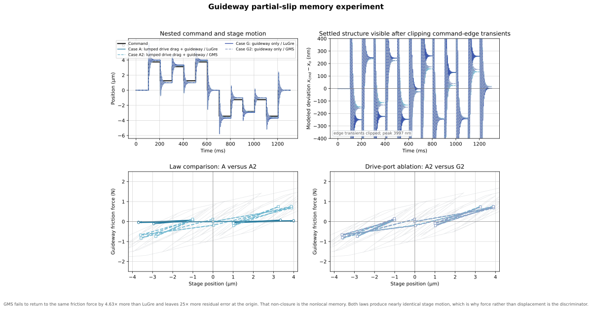
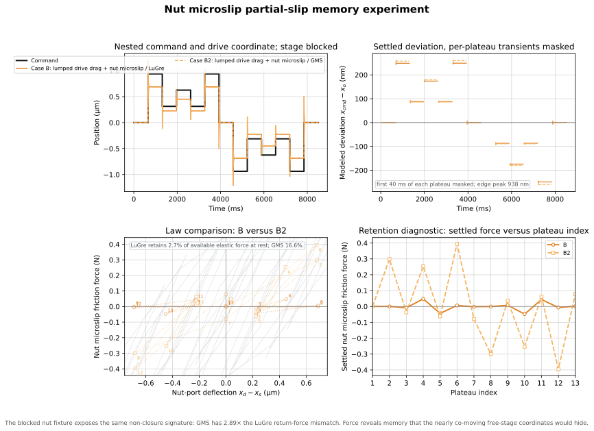
9.1 Exact 1/16-microstep commands
One pre-distortion subdivision is
The live derived value is m, or 312.5 nm at the production default.
After a 5 ms zero dwell, every listed level is held for ms. The builder computes
where \(\omega_{min}\) uses the softest local detent tangent. The live reduced estimates are ms and ms; the full ten-DOF audit gives 69.8 ms, while the executable dwell deliberately uses the reduced plant. The 100 ms floor currently governs. Changing either damping path can increase dwell automatically; see the consequence in Section 7.
| Plateau | A/A2 guideway (microsteps) | B/B2 blocked nut (microsteps) | Purpose |
|---|---|---|---|
| 1 | 0 | 0 | origin |
| 2 | +12 | +3 | positive outer reversal |
| 3 | +4 | +1 | first inner return level |
| 4 | +10 | +2 | nested reversal |
| 5 | +4 | +1 | revisit inner level |
| 6 | +12 | +3 | revisit outer level |
| 7 | 0 | 0 | close positive branch |
| 8 | -11 | -3 | negative outer reversal |
| 9 | -4 | -1 | second inner return level |
| 10 | -9 | -2 | nested reversal |
| 11 | -4 | -1 | revisit inner level |
| 12 | -11 | -3 | revisit outer level |
| 13 | 0 | 0 | final positive step back to the origin |
The guideway levels are +3.750/+3.125/+1.250 µm and -3.4375/-2.8125/-1.250 µm. The one-microstep outer and nested asymmetry is 312.5 nm; it prevents positive and negative branches from masking memory asymmetry through exact mirroring. The former half-microstep offset is not executable at 1/16. The blocked-nut levels are ±0.9375, ±0.6250, and ±0.3125 µm; no smaller negative-side offset is available on the integer grid. All commands use the nonlinear magnetic law and close at their starting command.
9.2 Why this remains presliding while still activating GMS memory
For the first guideway GMS element, the zero-speed yield displacement predicted by the provisional parameters is
Its live value is µm.
The second guideway element yields at
Its live value is µm.
These thresholds are conditional on provisional g_Fs. At 1.2 N the four guideway thresholds become 0.39, 1.05, 2.37, and 6.32 µm: the 1.250 µm inner level then lies above threshold 2, while the 3.750 µm outer level crosses threshold 3. Recheck the command design whenever g_Fs changes.
The 3.7500 µm outer command crosses the nominal yield distances of two elements. The 1.250 µm inner level clears threshold 1 by 0.263 µm, rather than sitting 50 nm below it as a three-microstep command would. The generated force audit checks whether the aggregate interface remains below gross breakaway.
For the nut microslip site, the first three nominal yield deflections are , , and µm. A free stage follows most of a slow drive command, so the original free-stage B/B2 memory run produced too little differential motion and did not test those thresholds. In the corrected dedicated fixture, \(x_s=0\) and the measured port coordinate is \(x_d-x_s=x_d\). Its ±0.9375 µm outer command traverses the first two thresholds but remains 0.2625 µm below the third. This is the partial-slip region needed to distinguish \(\sigma_{0,n}\) from conservative \(k_{ax}\) instead of merely repeating the same small-signal spring or driving every element into slip.
At 1/16 microstepping the nut-port experiment has exactly three usable levels between the origin and the third yield threshold, and the command quantum of 312.5 nm is larger than the first yield distance of 0.200 µm. The nested-reversal structure is preserved but with no spare resolution: any downward revision of \(F_{s,n}\), which moves all four thresholds proportionally, will push the outer level past the third threshold and invalidate the amplitude argument. The design is executable but not robust to parameter change.
This distinction matters. If every element stayed perfectly elastic, both laws would reduce almost to a spring and their loops would be indistinguishable. If every element entered gross sliding, the nested presliding memory would be erased. The chosen amplitude lies between those two uninformative limits for the current provisional parameters.
9.3 Nonlocal-memory mechanism: one LuGre state versus four GMS states
LuGre compresses the guideway interface into one average bristle state \(z_g\). At a given current \(z_g\) and velocity it has no independent record of several earlier reversal points. It produces a local hysteresis loop, but nested minor-loop closure is not an independently stored property.
GMS carries four element-force states \(F_{1,g},\ldots,F_{4,g}\) with different stiffnesses and yield thresholds. A reversal can unload one element while another remains on a different branch. The vector of retained states therefore depends on more than the latest displacement and preserves the order of prior extrema. This is the nonlocal memory being exercised when the +12/+10/+4 and -11/-9/-4 microstep levels are revisited.
9.4 Metrics, equations, and interpretation
Let \(x_o=x_s\) for the normal free-stage A/A2 test and \(x_o=x_d\) for the blocked-stage B/B2 test. Let \(\bar d_j\) and \(\bar F_j\) be the means of \(d=x_{cmd}-x_o\) and the selected site friction force over the final 20 ms of plateau \(j\). For the repeated-level pair set
where the plateau numbers are one-based as in the table, define
\(E_{ret}\) measures how closely the modeled plant response returns to the same result at a repeated command level; \(F_{ret}\) directly measures constitutive return-point closure. The final-origin metric is \(|\bar d_{13}|\). Whole-sequence RMS is also reported, but it is dominated by the commanded jumps and is less sensitive to hysteretic memory.
\(A_{loop}=\left|\oint F_f\,dx_o\right|\) is the dissipated energy of the closed sequence, evaluated by trapezoidal integration along the stored dynamic trajectory. The plotted forces come directly from time integration, not from a position reconstruction: faint lines show the full trace and markers show final-window means. The free-stage guideway loop integrates against \(x_s\); the blocked-stage nut loop integrates against \(x_d-x_s=x_d\) and requires reaction-force measurement. Individual increments may return stored elastic energy, but the closed total is positive.
Guideway: A/A2
Normal free-stage plant; the observed output is the stage coordinate.
| Executed metric | LuGre A | GMS A2 | LuGre G | GMS G2 | A2 minus G2 (% vs G2) | GMS minus LuGre |
|---|---|---|---|---|---|---|
| Whole-sequence RMS command-output deviation | 454.95 nm | 440.16 nm | 464.53 nm | 449.93 nm | -9.77 nm (-2.2%) | -14.79 nm |
| Peak absolute command-output deviation | 3995.67 nm | 3882.25 nm | 3997.30 nm | 3899.49 nm | -17.24 nm (-0.4%) | -113.42 nm |
| Mean repeated-return deviation mismatch | 3.00 nm | 14.83 nm | 2.90 nm | 13.58 nm | +1.25 nm (+9.2%) | +11.83 nm |
| Mean repeated-return friction-force mismatch | 0.0215 N | 0.0996 N | 0.0211 N | 0.0987 N | +0.0009 N (+0.9%) | +0.0781 N |
| Absolute mean error after final return to zero | 0.68 nm | 16.80 nm | 1.21 nm | 15.63 nm | +1.17 nm (+7.5%) | +16.12 nm |
| Dissipated energy of the closed loop \(A_{loop}\) | 53.32 µJ | 31.88 µJ | 55.49 µJ | 32.99 µJ | -1.11 µJ (-3.4%) | -21.44 µJ |
Ablating the drive port moves every guide metric by less than 10%; \(F_{ret}\) moves by 0.9%. A/A2 is therefore a serviceable guideway-memory proxy, though not an uncoupled fixture. This supersedes the pre-1/16 estimate of a 27–32% drive-port effect.
Maximum executed guideway friction is 2.090 N (69.7% of the provisional 3.0 N macro breakaway level).
Nut microslip: B/B2
Dedicated blocked-stage identification boundary, \(x_s=0\); the observed output is the drive coordinate.
| Executed metric | LuGre B | GMS B2 | GMS minus LuGre |
|---|---|---|---|
| Whole-sequence RMS command-output deviation | 177.11 nm | 182.40 nm | +5.29 nm |
| Peak absolute command-output deviation | 938.46 nm | 938.14 nm | -0.32 nm |
| Mean repeated-return deviation mismatch | 0.25 nm | 1.14 nm | +0.89 nm |
| Mean repeated-return friction-force mismatch | 0.0212 N | 0.0610 N | +0.0398 N |
| Absolute mean error after final return to zero | 0.94 nm | 0.63 nm | -0.31 nm |
| Dissipated energy of the closed loop \(A_{loop}\) | 5.00 µJ | 2.61 µJ | -2.39 µJ |
Maximum executed nut microslip friction is 1.074 N (67.2% of the provisional 1.6 N macro breakaway level).
Every plateau is held for 100 ms. The B/B2 boundary applies the finite-amplitude correlation-breaking rationale stated above; it is not used for normal plant-response plots, and the Step 1 fixture has no exact simulation twin.
For the rebuilt loops, GMS dissipates % of LuGre energy at the guideway and % at the nut. Its return-force mismatch is × the guideway LuGre value and × the nut LuGre value. These ratios describe the provisional executed loops, not a general ranking of the laws.
The closed path is observed in the physical coordinate, not inferred from the command: A2 returns to nm from the origin, about 0.45% of the 3.75 µm outer excursion.
The comparison does not assume that GMS is better. Nonlocal memory is a structural capability of GMS, not a guarantee of lower command-output deviation with provisional parameters. The generated metrics show the executed result; measured force loops must select and fit the constitutive law.
9.5 Detent contamination and the forced identification order
Measuring with the motor unpowered does not remove detent. Detent is the unpowered cogging torque of the permanent-magnet rotor against the salient stator poles; it is present precisely when the phases are de-energized. It completes one cycle per full step, so at a 1 mm lead and 1.8° steps its spatial period is 5 µm. Reflected at 5 to 15% of the 60 mN·m holding torque it is 19 to 57 N, larger than every friction term on the drive port combined, and any breakaway or constant-torque measurement that does not cancel it folds most of it into d_Fs.
Three methods cancel it, in order of preference:
- Bidirectional averaging at matched rotor positions. Detent is an odd function of position and even in the direction of travel; friction is the reverse. At the same rotor angle \(\theta\), \(T_+(\theta)=T_{fric}+T_{det}(\theta)\) and \(T_-(\theta)=-T_{fric}+T_{det}(\theta)\), so \(T_{fric}=(T_+-T_-)/2\) and \(T_{det}(\theta)=(T_++T_-)/2\). This needs no disassembly and returns both quantities from one dataset.
- Constant-velocity sweep averaged over an integer number of full steps. Detent has zero mean over one full-step period; friction does not. Average the drive effort over \(N\) complete 5 µm intervals and the detent term cancels exactly.
- Motor-decoupled measurement. Remove the coupling and measure screw, bearing, and nut drag alone, then the motor alone. This is the only method that also separates rotor-bearing drag from the rest, but it requires disassembly and loses the preload state if the bearing is disturbed.
Velocity hazard for method 2. Detent excites the structure at \(v/5\ \mu\mathrm m\), so specific feedrates place it directly on a structural mode:
| Mode | Frequency source | Detent-resonant velocity | Avoid band, ±5% |
|---|---|---|---|
| Drive pole | model: Hz | mm/s | 0.797–0.881 mm/s |
| Axial mode | measured: 681–690 Hz | 3.405–3.450 mm/s | 3.235–3.623 mm/s |
| First eliminated mode | model: Hz | mm/s | 9.509–10.511 mm/s |
The measured axial band, rather than the calibrated 695.82 Hz model target, is used for experiment planning. All three velocities sit inside the operating range. Stay outside the bands for friction sweeps, or enter them deliberately for modal excitation.
The 312.5 nm command jumps introduce a second, lower-speed hazard because the microstep pulse train excites the structure at \(v/q_\mu\):
| Mode | Frequency | Microstep-ripple resonant velocity | Avoid band, ±5% |
|---|---|---|---|
| Drive pole | 167.86 Hz | 52.5 µm/s | 49.8–55.1 µm/s |
| Axial mode | 681–690 Hz measured | 212.8–215.6 µm/s | 202–226 µm/s |
| First eliminated mode | 2002 Hz | 625.6 µm/s | 594–657 µm/s |
The detent and microstep-ripple hazards are separated by a factor of 16 in velocity, so a sweep speed chosen to avoid one can land on the other. These feedrates are well inside the operating range and a quasi-static identification sweep would naturally traverse them; the corresponding 1/256 values were only 3.3, 13.5, and 39.1 µm/s.
At 1/16 there are 16 commanded samples per 5 µm detent cycle, so each microstep advances detent phase by 22.5°. Detent torque is no longer approximately constant across one microstep: the per-microstep position error gains a systematic full-step-period component that compounds with microstep nonlinearity and cannot be removed by averaging over full steps. This confound is assigned to the planned ablation rather than added to the present model.
The identification order is forced by the port structure, not chosen for convenience. As 8.0 shows, \(F_g\) and \(F_d\) are near-perfectly correlated in steady motion while the nut port is silent:
- Guideway alone, before the screw is coupled. Quasi-static ramp and reverse. This is the only configuration in which \(F_g\) is observable by itself.
- Assembled axis, bidirectionally averaged constant-velocity sweep, at a velocity away from the three resonant values above. Returns \(F_g+F_d\); subtract step 1 to obtain \(F_d\).
- Blocked-stage reversal experiments for the nut port, against two already-known ports.
10. Response comparison across friction cases
All cases use the same mechanical plant. The table shows the active force placement.
| Cases | Active port | Generalized force |
|---|---|---|
| 0 | none | \([F_{mag}+F_{det}-c_m\dot x_d,\ 0]^T\) |
| A, A2 | lumped drive drag + guideway | \([F_{mag}+F_{det}-c_m\dot x_d-F_{f,d},\ -F_{f,g}]^T\) |
| G, G2 | guideway only; drive-port ablation | \([F_{mag}+F_{det}-c_m\dot x_d,\ -F_{f,g}]^T\) |
| B, B2 | lumped drive + nut microslip | \([F_{mag}+F_{det}-c_m\dot x_d-F_{f,d}-F_{f,n},\ +F_{f,n}]^T\) |
| C, C2 | all identifiable ports | \([F_{mag}+F_{det}-c_m\dot x_d-F_{f,d}-F_{f,n},\ F_{f,n}-F_{f,g}]^T\) |
| A1v | A topology with restored micro-viscous term | same force placement as A |
The main nonlinear sequence is now
It probes absolute levels 0.3125, 0.6250, 0.9375, and 1.8750 µm in 312.5 nm quanta. The largest adjacent increment is four quanta = 1.250 µm, at the quarter-step command bound. Each nonzero level is held for the derived 100 ms dwell, and the final move is positive from \(-3q_\mu\) to the starting level zero. Thus the main run crosses provisional yield distances instead of reducing every law to the same elastic spring.
Case 0 - frictionless global baseline
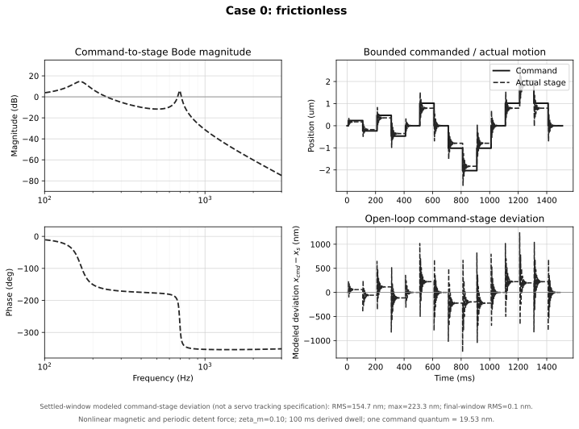
Cases A and A2 - guideway LuGre/GMS pair
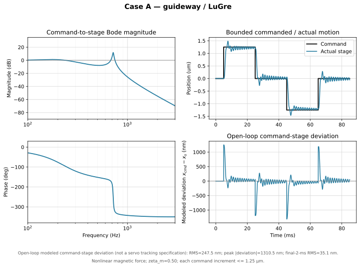
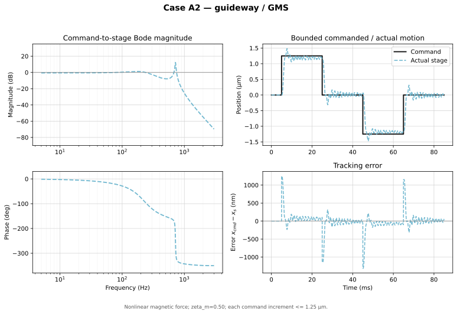
Cases G and G2 - guideway-only drive-port ablation
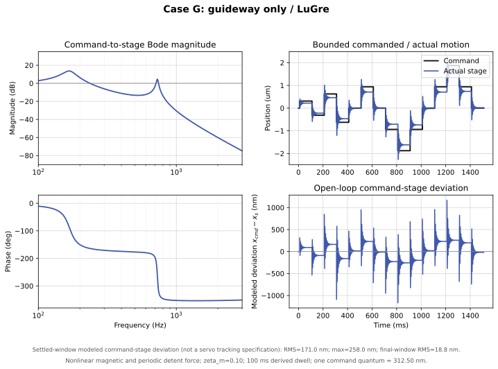
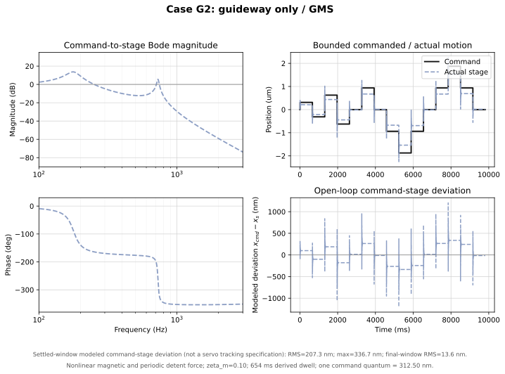
Cases B and B2 - nut-microslip LuGre/GMS pair
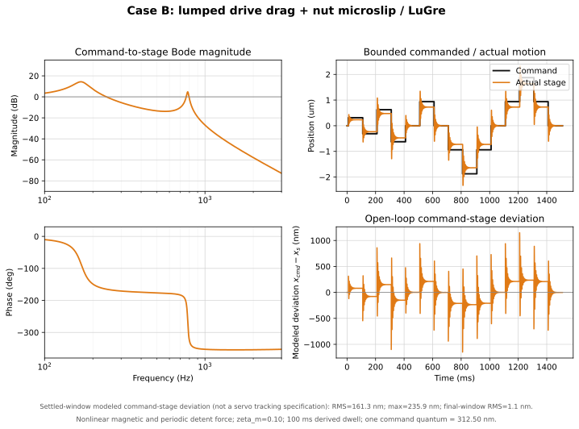
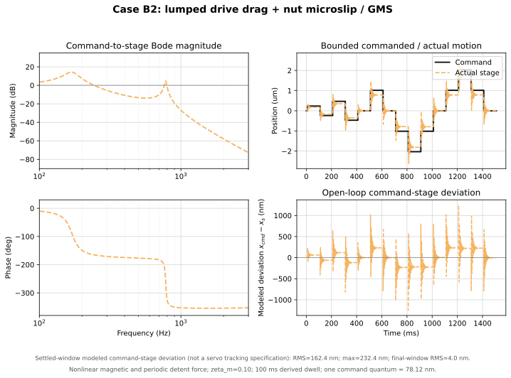
Case A1v - restored micro-viscous sensitivity
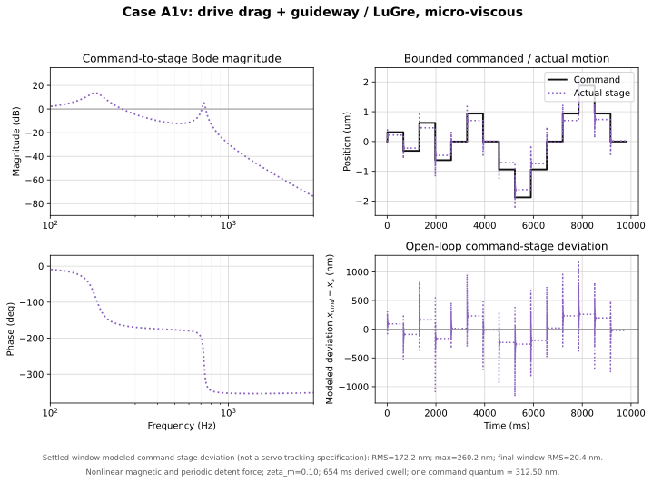
Cases C and C2 - all identifiable ports
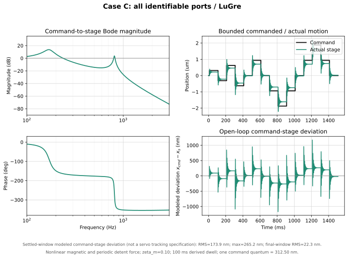
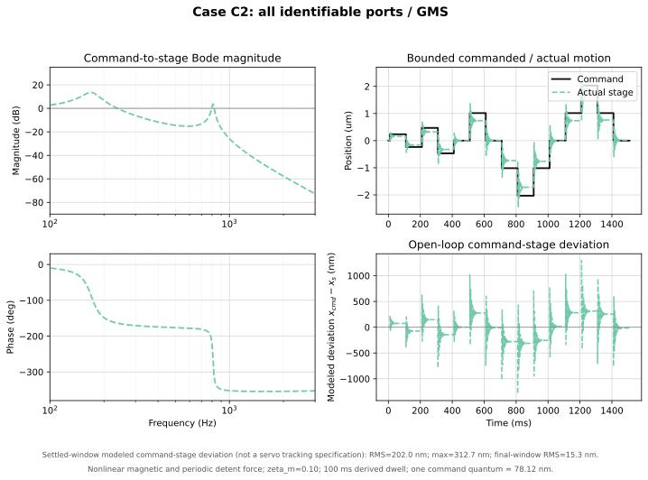
The legends report settled-window RMS and maximum modeled command-stage deviation. These are simulated open-loop plant outcomes under each friction hypothesis, not closed-loop tracking-error specifications.
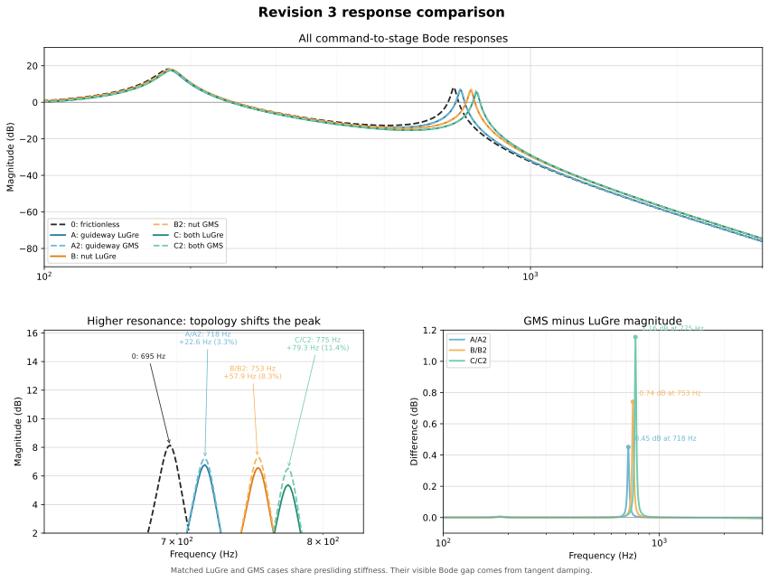
| Topology | Local peak | Shift from Case 0 | Largest GMS/LuGre gap | Cause |
|---|---|---|---|---|
| Case 0 | 695.5 Hz | reference | not applicable | No friction tangent |
| A/A2 | 728.2 Hz | +32.7 Hz, +4.7% | 0.00 dB at 5 Hz | Guideway presliding stiffness acts against ground |
| G/G2 | 728.2 Hz | +32.7 Hz, +4.7% | 0.00 dB at 5 Hz | Guideway-only drive-port ablation on the same free-stage plant |
| B/B2 | 781.0 Hz | +85.5 Hz, +12.3% | 0.00 dB at 5 Hz | Nut microslip shifts the relative mode; the same lumped drive tangent is shared by every friction case |
| C/C2 | 809.6 Hz | +114.2 Hz, +16.4% | 0.00 dB at 5 Hz | All three identifiable friction tangents are active |
Each matched LuGre/GMS pair has the same presliding stiffness, so its resonance frequency is the same. LuGre adds \(\sigma_1+\sigma_2\) tangent damping. The current GMS tangent adds only \(\sigma_2\). This damping difference changes peak height, most visibly in C/C2.
10.1 IDS back-and-forth microstepping comparison
The appended Microstepping Test Data/IDSdata.txt file contains five Axis-1 displacement records labelled step sizes 1, 2, 4, 8, and 16. Each record begins with a quiet baseline and then alternates between two positions. Transition detection gives an approximately 1.17 s dwell at each level. The controller-counter exports independently confirm this timing for labels 1, 2, 8, and 16; no matching controller CSV was supplied for label 4.
The measurement sign is normalized so the first move is positive. Only the pre-motion offset is removed: no drift correction, amplitude scaling, or fit to the simulation is applied.
For the comparison below, the command amplitude is defined from the current 5 µm full-step pitch:
The detected reversal times are reused for the simulations. Cases C and C2 are shown because they execute every identifiable friction port with the existing provisional LuGre and GMS parameters. These are forward predictions, not parameter fits to the IDS records.
| Step-size label | Nominal command | IDS plateau | IDS minus nominal | IDS / nominal | Case C plateau | Case C2 plateau | Median dwell |
|---|---|---|---|---|---|---|---|
| 1 | 5.0000 µm | 5.1813 µm | +181.3 nm | 103.6% | 4.9992 µm | 4.8969 µm | 1.167 s |
| 2 | 2.5000 µm | 2.4583 µm | -41.7 nm | 98.3% | 2.4859 µm | 2.3897 µm | 1.155 s |
| 4 | 1.2500 µm | 1.2778 µm | +27.8 nm | 102.2% | 0.9692 µm | 0.9313 µm | 1.177 s |
| 8 | 0.6250 µm | 1.1823 µm | +557.3 nm | 189.2% | 0.4477 µm | 0.4313 µm | 1.177 s |
| 16 | 0.3125 µm | 0.4065 µm | +94.0 nm | 130.1% | 0.2165 µm | 0.2131 µm | 1.167 s |
The file label is interpreted as the microstep divisor, so the nominal command is the 5 µm full-step pitch divided by 1, 2, 4, 8, or 16. Axis-1 polarity is normalized so the first move is positive, and only the pre-motion offset is removed; the measured amplitude is not scaled or fitted to the model. The step-size-8 record reaches nearly twice its nominal 0.625 µm command, and step-size 16 is also high. The supplied files contain IDS and encoder-counter positions but no independent commanded-position channel. The controller counters corroborate the same two-level timing and relative motion for labels 1, 2, 8, and 16, but they cannot by themselves distinguish a microstep-configuration/label error from an unexpected plant response. These discrepancies are therefore retained rather than normalized away.
Cases C and C2 are forward predictions using the same provisional full-port LuGre and GMS parameters as the rest of Revision 3. They are not fits to these IDS data. Both current predictions fall below the measured settled motion for labels 1, 4, 8, and 16. The increasing small-command shortfall points to provisional presliding friction/detent parameters or an incorrect nominal-command interpretation; this dataset alone cannot select between those explanations or establish that LuGre or GMS is the better law. The IDS median sample interval is approximately 88 ms (about 11.4 Hz), so these records compare plateau amplitude, drift, and reversal repeatability; they cannot validate the modeled 168 Hz or 696 Hz edge transients. The comparison-only solver uses 100 µs; halving it to 50 µs changed a representative settled C2 trajectory by 0.18 nm RMS.
11. Generated numerical summary
| Case | Friction law | Global-linear modes (Hz) | Local friction-tangent gain \(X_s/X_{cmd}\) | Smallest first-yield travel | First-step overshoot | Settled-window RMS deviation | Settled-window maximum | All-time peak deviation | Final-window RMS deviation |
|---|---|---|---|---|---|---|---|---|---|
| 0 | none | 167.9, 695.8 | 1.00000 | not applicable | 41.0% | 160.6 nm | 234.4 nm | 1147.8 nm | 0.1 nm |
| A | LuGre | 170.5, 729.1 | 0.88275 | 0.583 µm | 26.6% | 172.4 nm | 261.2 nm | 1170.1 nm | 20.6 nm |
| A2 | GMS | 170.5, 729.1 | 0.88275 | 0.583 µm | 25.8% | 215.7 nm | 358.7 nm | 1210.5 nm | 16.2 nm |
| G | LuGre | 168.4, 729.1 | 0.90498 | 0.987 µm | 28.7% | 171.0 nm | 258.0 nm | 1167.9 nm | 18.8 nm |
| G2 | GMS | 168.4, 729.1 | 0.90498 | 0.987 µm | 28.1% | 207.7 nm | 339.3 nm | 1201.7 nm | 12.0 nm |
| B | LuGre | 170.0, 780.9 | 0.97530 | 0.200 µm | 38.4% | 161.3 nm | 235.9 nm | 1148.9 nm | 1.1 nm |
| B2 | GMS | 170.0, 780.9 | 0.97530 | 0.200 µm | 38.3% | 168.4 nm | 253.7 nm | 1157.0 nm | 4.5 nm |
| C | LuGre | 170.5, 810.6 | 0.89928 | 0.200 µm | 27.5% | 173.9 nm | 265.2 nm | 1173.6 nm | 22.3 nm |
| C2 | GMS | 170.5, 810.6 | 0.89928 | 0.200 µm | 27.0% | 207.2 nm | 341.2 nm | 1200.6 nm | 13.6 nm |
| A1v | LuGre | 170.5, 729.1 | 0.88275 | 0.583 µm | 26.5% | 172.5 nm | 261.5 nm | 1170.4 nm | 20.8 nm |
The displayed modes and gains are the global commutation linearization: periodic detent is deliberately excluded from the global stiffness matrix. The friction tangent is local and valid only below the listed first-yield travel. The nonlinear cases include periodic detent torque and use a 100 ms dwell: max(100 ms, 46.4 ms detent-softened drive, 58.3 ms reduced axial mode). Settled values collect the last 20 ms of every plateau. All deviation columns use \(d(t)=x_{cmd}(t)-x_s(t)\) and describe open-loop modeled plant behavior, not servo tracking performance. Case 0 remains frictionless.
Generated reduction audit
| Quantity | Executed value |
|---|---|
| Measured stage body mass | 0.355 kg |
| Nut body mass retained at stage node | 0.050 kg |
| Derived retained stage-side mass | kg |
| Upper-mode calibration target | 695.82 Hz |
| Modal-calibrated \(k_{ax}\) | N/m |
| Closure-derived \(k_{ball}\) | N/m |
| Motor rotor inertia | 9.000e-07 kg m² |
| Coupling inertia | 1.180e-06 kg m² |
| 0.192 m screw inertia | 6.061e-07 kg m² |
| 0.192 m screw mass | 0.0758 kg |
| Stage travel / usable screw distance | 150 / 170 mm |
| Full-model reflected drivetrain mass | 106.042 kg |
| Rated-current holding torque | 0.060 N m |
| Enabled detent torque | 0.005 N m |
| Global commutation low pole | 167.86 Hz |
| Local detent-tangent low-pole band | 137.06 to 193.82 Hz |
| Full/reduced sequence RMS residual | 99.572 nm |
| Full/reduced sequence peak residual | 245.619 nm |
| RMS residual / command amplitude | 1.991% |
| Peak residual / command amplitude | 4.912% |
The reduced drive mass is derived from the listed component inertias and the current lead. It is not an independent input. The normalized residual, unlike its nanometre value, is invariant to a simple rescaling of this linear verification command.
12. Interpreting commanded and actual motion
The plotted difference is defined as
The reported metrics are
| Metric | Window | Interpretation |
|---|---|---|
| Whole-sequence RMS | full 1510 ms | Includes every command edge; retained as a transient descriptor |
| Settled-window RMS / maximum | final 20 ms of every 100 ms plateau | Compares the friction hypotheses after drive ringing has decayed |
| Peak absolute deviation | full 1510 ms | Usually occurs at a command edge |
| Final-window RMS | final 20 ms | Describes the last zero-command dwell |
These are open-loop model descriptors, not tracking specifications. The model has no position controller, estimator, sensor dynamics, or shaped trajectory. The damping term \(c_m\) removes the earlier unphysical sustained ringing. Remaining values are provisional until \(c_{ax}\) and the friction parameters are identified; the requested electromagnetic baseline is \(\zeta_m=0.10\). The installed lead screw is recorded as IT3 in the entry table.
Pre-distortion has separate position and timing channels. Position set-points inherit the 312.5 nm 1/16 grid, but pulse issue times are limited only by the motion-controller timer, which has sub-microsecond resolution. Deceleration shaping operates through that timing channel and is unaffected by the coarser position grid; only position pre-distortion inherits the 312.5 nm floor.
13. Verification checks and limitations
Checks performed by construction
- \(\mathbf M\) is diagonal and positive for all executed parameters.
- Every passive spring and damper is added by a positive-semidefinite outer product.
- The nut virtual-work vector applies \(+rF_n\), \(+F_n\), and \(-F_n\) with consistent power.
- The GMS negative-velocity slip equilibrium is attracting.
- The nonlinear command is held constant over all four RK4 stages at a discontinuity.
- The main response uses 312.5 nm 1/16 microsteps, spans 0.3125 to 1.8750 µm absolute levels, and limits adjacent increments to 1.250 µm. The separate memory-identification test intentionally reaches 3.7500 µm and uses the nonlinear magnetic law.
- Full and reduced verification use the same command, sample grid, and damping repair.
- The generated metrics table is rewritten by the builder, tying numbers to executed code.
- The builder asserts \(\sum_i\nu_i=1\) and \(\sum_i k_i=\sigma_0\) for every defined GMS site before simulation.
13.1 GMS step-halving convergence
The production nonlinear plots use fixed-step RK4 with \(h=25\) µs. To test sensitivity of the requested final-window RMS result on the longer settled trajectory, the builder reruns A2, B2, and C2 using \(h=50\), 25, and 12.5 µs, then adds an A2-only \(h=6.25\) µs run. All command transitions fall exactly on these grids, and the command remains one zero-order-held value across the four RK stages of each step.
Because branch switching is resolved on the RK trial grid without event localization (8.3), the observed convergence order is expected to fall below four. This table is therefore a sensitivity check, not an order verification.
| Case | 50.0 us | 25.0 us | 12.5 us | 6.25 us (A2 only) | \(\Delta R_{50\to25}\) | \(\Delta R_{25\to12.5}\) | \(\Delta R_{12.5\to6.25}\) | Observed \(p\) |
|---|---|---|---|---|---|---|---|---|
| A2 | 16.13778 nm | 16.18075 nm | 16.29398 nm | 16.32724 nm | 0.04297 nm | 0.11323 nm | 0.03326 nm | -1.40 |
| B2 | 4.41395 nm | 4.46698 nm | 4.47532 nm | — | 0.05303 nm | 0.00834 nm | — | 2.67 |
| C2 | 13.52097 nm | 13.59914 nm | 13.62751 nm | — | 0.07817 nm | 0.02837 nm | — | 1.46 |
B2 and C2 show reduced successive differences under step halving: B2 (\(p=2.67\)), C2 (\(p=1.46\)). Their observed orders are empirical hybrid-trajectory indicators, not an RK4 order claim.
A2 does not show the same trend over the first three grids: \(p=\). The additional A2 difference falls from 0.11323 nm to 0.03326 nm. The 12.5 us A2 point was a grid-sensitive branch-switching artifact; the finer point reverses the apparent divergence.
These values use the identical 1510 ms zero-order-held, yield-spanning command and the identical final 20 ms RMS definition. Since GMS branch switching is evaluated at RK trial states without event localization, the observed order is a sensitivity indicator, not a claimed fourth-order convergence rate for the hybrid trajectory.
13.2 GMS branch-selection census
The executed GMS branch test is stateless: it reconstructs stick or slip from \((v,F_i)\) at every Runge-Kutta evaluation instead of carrying a persistent per-element flag. This census advances a shadow persistent flag alongside the executed trajectory and counts where the two disagree. The shadow flag never feeds a derivative, so collecting it cannot change any reported result. Counts are element-evaluations: four elements per site per RK stage, over the 1510 ms main sequence. The re-priced comparison below uses the Section 9 memory trajectory, which is a different trajectory.
| Case | Site | flips_reversal | flips_threshold | evals_total | Threshold share |
|---|---|---|---|---|---|
| A2 | Drive side \(d\) | 24 | 2,000 | 959,996 | 0.208% |
| A2 | Guideway \(g\) | 12 | 668 | 959,992 | 0.070% |
| G2 | Guideway \(g\) | 14 | 784 | 959,992 | 0.082% |
| B2 | Drive side \(d\) | 24 | 2,026 | 959,996 | 0.211% |
| B2 | Nut microslip \(n\) | 0 | 0 | 959,996 | 0.000% |
| C2 | Drive side \(d\) | 24 | 2,010 | 959,996 | 0.209% |
| C2 | Guideway \(g\) | 12 | 808 | 959,992 | 0.084% |
| C2 | Nut microslip \(n\) | 0 | 0 | 959,996 | 0.000% |
flips_reversal counts transitions to stick caused by \(vF_i\le0\), which both models make. flips_threshold counts transitions to stick caused by \(|F_i|<\nu_is(v)\) with no velocity reversal, which the persistent-state model would not make. Only the second column is a departure.
flips_threshold is not zero: 8,296 element-evaluations across the executed GMS cases, against 110 genuine reversals and 7,679,956 evaluations. The departure is therefore active, and it is the dominant re-stick mechanism rather than a rare corner: threshold-driven reclassification outnumbers reversal-driven re-stick by 75 to 1. Its cost is priced by rerunning each affected case with the shadow flag enforced, so that a yielded element keeps slipping and chases the rising threshold at rate \(C\) until an actual reversal.
| Case | Executed settled-window RMS | Persistent-flag rerun | Change |
|---|---|---|---|
| A2 | 215.718 nm | 217.344 nm | +1.627 nm (+0.75%) |
| G2 | 207.685 nm | 208.627 nm | +0.943 nm (+0.45%) |
| B2 | 168.401 nm | 168.849 nm | +0.448 nm (+0.27%) |
| C2 | 207.155 nm | 208.764 nm | +1.609 nm (+0.78%) |
The largest settled-window change is 0.78%. That number understates the departure, and the reason is structural. The settled window is the final 20 ms of a single plateau, sampled after motion has stopped, whereas the departure occurs during deceleration while \(s(v)\) is rising. A metric evaluated at rest on one plateau has no mechanism for seeing it.
The nut site records zero threshold flips in both B2 and C2. In steady motion the nut-port velocity \(\dot x_d-\dot x_s\) is identically zero because the elastic deformation is constant, so every nut element is stuck and no branch decision is ever contested. See 8.0.
Memory-sequence branch census
The Section 9 memory trajectory lasts 1305 ms. Its branch counts are measured on that trajectory itself; they are not copied or duration-scaled from the main-sequence census.
| Case | Site | flips_reversal | flips_threshold | evals_total | Threshold share |
|---|---|---|---|---|---|
| A2 | Drive side \(d\) | 89 | 4,546 | 767,996 | 0.592% |
| A2 | Guideway \(g\) | 54 | 2,007 | 767,992 | 0.261% |
| G2 | Guideway \(g\) | 55 | 2,154 | 767,992 | 0.280% |
| B2 | Drive side \(d\) | 8 | 679 | 767,996 | 0.088% |
| B2 | Nut microslip \(n\) | 44 | 3,178 | 767,996 | 0.414% |
The memory-sequence threshold-to-reversal ratio is 50.3:1, versus 75.4:1 on the main sequence. It materially differs under the stated 20% relative-change criterion (33.4% here).
Re-priced against the Section 9.4 loop metrics
The repeated-return metrics compare settled means at the same command level reached by different histories, so their value depends on every intervening deceleration. The loop area is integrated along the dynamic trace itself. Both can see what the settled window cannot. The threshold column is the GMS-minus-LuGre gap on the same metric: the effect the Section 9 experiment exists to detect, and therefore the level the departure has to stay below to count as bookkeeping.
| Case | Metric | Executed (stateless) | Persistent-flag rerun | Change | GMS − LuGre gap | Exceeds? |
|---|---|---|---|---|---|---|
| A2 | \(E_{ret}\) | 15 nm | 17 nm | +2.7 nm | 12 nm | no |
| A2 | \(F_{ret}\) | 0.09957 N | 0.1244 N | +0.02484 N | 0.07805 N | no |
| A2 | final-origin magnitude \(D_{13}\) | 17 nm | 16 nm | -0.46 nm | 16 nm | no |
| A2 | loop area \(A_{loop}\) | 31.88 µJ | 29.42 µJ | -2.46 µJ | 21.44 µJ | no |
| B2 | \(E_{ret}\) | 1.1 nm | 1.1 nm | -0.058 nm | 0.89 nm | no |
| B2 | \(F_{ret}\) | 0.06096 N | 0.05824 N | -0.002718 N | 0.03979 N | no |
| B2 | final-origin magnitude \(D_{13}\) | 0.63 nm | 0.74 nm | +0.11 nm | 0.31 nm | no |
| B2 | loop area \(A_{loop}\) | 2.61 µJ | 2.39 µJ | -0.22 µJ | 2.39 µJ | no |
On the metric the experiment is built around, the departure moves \(F_{ret}\) for A2 by 0.0248 N against a law gap of 0.0781 N, which is 32% of the effect being measured.
This conclusion is conditional on command resolution. The earlier 1/256 run priced the same A2 \(F_{ret}\) departure at 91.5% of the law gap; the rebuilt production 1/16 sequence prices it at 32%. Coarser executable commands changed the loop trajectory and the comparison margin, so the branch-model warning must be re-evaluated whenever the microstep divisor or reversal sequence changes.
No Section 9.4 metric moves by more than the GMS-minus-LuGre difference on that metric, so the departure stays below the effect the experiment is designed to detect. It remains a defect to close before identification, because the margin is not large.
13.3 Stribeck relaxation-time sensitivity
\(C\) is the least anchored parameter in Section 8: it is identified from measured hysteresis loops in the source GMS work and is assumed here. The A/A2 guideway memory sequence is rerun at three relaxation times spanning a factor of four, and the two metrics that can see the attractor dynamics are reported.
| \(\tau_C\) | Guideway \(C\) | \(F_{ret}\) (A2) | \(A_{loop}\) (A2) |
|---|---|---|---|
| 0.1 ms | 6000 N/s | 0.10010 N | 31.878 µJ |
| 0.2 ms | 3000 N/s | 0.09957 N | 31.880 µJ |
| 0.4 ms | 1500 N/s | 0.10020 N | 31.926 µJ |
Across a four-fold change in \(\tau_C\) the return-force mismatch spreads by 0.00063 N and the loop area by 0.05 µJ, against GMS-minus-LuGre gaps of 0.07805 N and 21.44 µJ on the same metrics. \(C\) is not a dominant uncertainty over this range. The spread is 0.8% of the force gap and 0.2% of the loop-area gap, so the law comparison in Section 9 survives the assumption. This bounds a weakness rather than removing it: the reported insensitivity holds over the tested range and does not license an arbitrary value.
The upper bound on \(\tau_C\) is dynamic, not statistical. The retained mode has a period of 1.437 ms, and the executed \(\tau_C\) is 7.2 times faster. At 0.4 ms that margin falls to 3.6, which is inside the range where the attractor dynamics begin to alias into the structural response; below roughly 0.05 ms it stiffens the ODE without adding physics.
Known limitations and measurements that would remove assumptions
- Coupling inertia and torsional stiffness require CAD or datasheet values.
- Bearing stiffness/contact angle and preload require BOM confirmation or static loading.
- \(k_{ball}\) is a closure-derived remainder, not a direct Hertzian calculation or measurement.
- Driver mode and effective damping should still be identified; the requested \(\zeta_m=0.10\) baseline is accompanied by a 0.02 to 0.50 sensitivity sweep.
- LuGre and GMS values require velocity sweeps and nested reversal tests.
- A2 final/settled-window RMS does not converge under step halving (observed order ). Branch switching without event localization is the suspected cause; A2 metrics therefore carry an unbounded discretization error until that implementation is repaired.
- The installed screw is IT3. A measured lead-error map is still absent and remains a full-range uncertainty.
- Yaw, pitch, roll, rail bending, cyclic error, runout, temperature, and load-dependent nut friction are omitted.
- The electrical winding/current-controller dynamics are represented only by effective stiffness and damping.
- Editing inputs in the rendered HTML recomputes dependent scalars, the marked live equations, and the live Bode plots. Publication SVGs and nonlinear LuGre/GMS simulations remain static until the Python builder is rerun.
Appendix A. Position-dependent axial stiffness
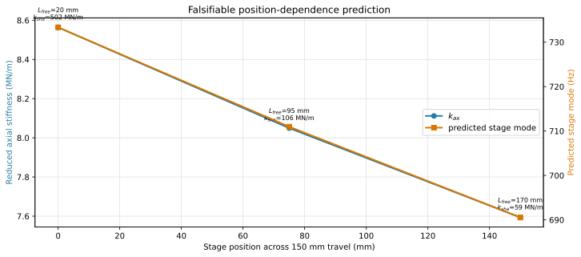
For the screw segment before the nut, \(k_{sha}=EA/L_{free}\). A longer free length reduces both \(k_{sha}\) and the series stiffness \(k_{ax}\). The plot now covers stage positions 0, 75, and 150 mm, corresponding to illustrative support-to-nut free lengths of 20, 95, and 170 mm within the approximately 170 mm usable screw distance. The exact machine datum should be measured before fitting this dependence.
Appendix B. Reduced-model bond graph

The two 1-junctions carry \(\dot x_d\) and \(\dot x_s\). The central 0-junction carries the common internal force. Structural compliance, damping, and nut microslip are distinct parallel constitutive elements. One identifiable drive-side drag connects to the drive junction and includes the physical gross-rolling contribution. The bond directions reproduce \(\mathbf Q_f=-\mathbf H^TF_f\) and \(P_f=-v_fF_f\le0\).
This graph is the visual form of the Section 8.0 incidence rows. It adds no model elements.
Appendix C. Critical-error disposition
| Item | Evaluation | Implemented disposition |
|---|---|---|
| 1 | Corrected | The two \([1,0]\) laws are one identifiable drive-side drag. The B/B2 test now exercises the 0.20 µm nut first yield and the \(k_{ax}\)/\(\sigma_{0,n}\) correlation. |
| 2 | Confirmed | Execute \(F_{f,d}\) in A/A2, B/B2, and C/C2. |
| 3 | Corrected | Periodic detent remains nonlinear; it is excluded from global \(\mathbf K\) and reported as a 137-194 Hz local band. Period is 5 µm; the 266 nm amplitude is unchanged. |
| 4 | Corrected | Both A/A2 and B/B2 memory tests use damping-derived 100 ms dwell and settled 20 ms means. |
| 5 | Corrected | The production 312.5 nm sequence spans 0.3125–1.8750 µm, crosses yield, and keeps each adjacent increment at or below 1.25 µm. |
| 6 | Updated | Execute the requested 0.10 electromagnetic damping and retain the 0.02 to 0.50 sensitivity sweep. |
| 7 | Confirmed | Keep the failed compliance budget prominent. State that reproducing 694 Hz is calibration, not validation. |
| 8 | Confirmed | Rename DC gain to presliding tangent gain and report the first-yield validity travel. |
| 9 | Corrected | The installed screw is IT3 per the BOM; the earlier IT1 entry was wrong and is now corrected in the parameter defaults. The removed Section 12.1 comparison is still not needed. |
| 10 | Stale in the supplied review | Full equations already apply equal and opposite microslip reactions. The bond graph audits the signs. |
| 11 | Updated | \(J_m\) and \(J_c\) are retained; the complete 192 mm screw inertia is recalculated and \(m_d\) rebuilt from the component sum. |
| 12 | Corrected, then re-corrected | Static damping condensation overstated retained damping by about an order of magnitude, and the frequency-domain replacement then understated it by a further order because the interface entries applied \(\eta=2\zeta\) at the wrong frequency. Interface loss factors are now declared at the retained mode and \(\zeta_j\) is derived from them, so the propagated link damper agrees with the executed value to 15%. Measured-FRF identification remains the decision path. |
| 13 | Open | The 0.405 kg BOM mass and 0.600 kg modal effective mass imply materially different \(k_{ax}\) and \(k_{ball}\). Section 6 now exposes both branches and requires an independent contact-stiffness or mass-loading resolution. |
| 14 | Corrected | Three Section 8 constitutive parameters changed, and every nonlinear result in Sections 9 to 13 moves with them. The Stribeck exponent \(\delta\) was executing at 1.0, an exponential decay, while being invisible in the parameter tables; it is now an exposed input at the conventional Gaussian 2.0. \(\sigma_1\) was 3.0, 5.0, and 9.0 N·s/m and is now zero at every site, because the 8.3 closure claim was true for stiffness but false for damping by a factor of 8.5 to 21; case A1v restores the former values so micro-viscous damping is studied rather than confounded. \(C\) was three unanchored 5000 N/s constants and is now \(C_\alpha=(F_{s,\alpha}-F_{c,\alpha})/\tau_C\) from one shared relaxation time, giving 3000, 2000, and 7500 N/s. Comparisons against any earlier revision must account for all three. |
| 15 | Open | Across A2, G2, B2, and C2, the stateless GMS branch test departs from the persistent-state model on 8,296 element-evaluations. Priced against the Section 11 settled window it is at most a 0.78% effect; against the 9.4 loop metrics it reaches 32% of the GMS-minus-LuGre gap on \(F_{ret}\). See 13.2. Persistent branch flags must still be added before any GMS parameter is identified. |
| 16 | Superseded conclusion | The earlier claim that 1/256 was needed for compensation granularity conflated resolution with accuracy. At production 1/16, the 90.2 nm RMS quantization floor is only 4.51% of the 2 µm repeatability budget, while divisor-independent microstep nonlinearity is plausibly 0.5–1.5 µm (25–75%). Pre-distortion is limited primarily by landing accuracy and friction, not command-grid fineness. |
Appendix D. Variable and parameter glossary
Expand all symbols, states, ports, and units
| Symbol | Definition | Unit |
|---|---|---|
| \(L\) | screw lead | m/rev |
| \(r=L/(2\pi)\) | screw transmission ratio | m/rad |
| \(N_r\) | rotor tooth count | – |
| \(\theta_m,\theta_c,\theta_{s1..s3}\) | full-model torsional coordinates | rad |
| \(u_b,u_e,u_f,u_n,x_s\) | full-model axial coordinates | m |
| \(x_d\) | reduced effective drive coordinate | m |
| \(x_{cmd}\) | commanded field-equivalent linear position | m |
| \(d_{model}=x_{cmd}-x_s\) | modeled open-loop command-stage deviation; not a servo tracking specification | m |
| \(J_m,J_c,J_{s1..s3}\) | rotational inertias | kg·m² |
| \(m_b,m_e,m_f,m_n,m_{stage}\) | axial lumped masses | kg |
| \(m_d,m_s\) | reduced drive and stage masses | kg |
| \(k_m\) | rotational magnetic stiffness | N·m/rad |
| \(K_m=k_m/r^2\) | reflected magnetic stiffness | N/m |
| \(T_{max},F_{max}\) | peak magnetic torque and reflected force | N·m, N |
| \(\kappa=N_r/r\) | magnetic spatial wavenumber | rad/m |
| \(k_{c1},k_{c2}\) | coupling torsional stiffnesses | N·m/rad |
| \(k_{\theta a},k_{\theta b}\) | screw torsional stiffnesses | N·m/rad |
| \(k_{brg}\) | support-bearing axial stiffness | N/m |
| \(k_{sha},k_{shb}\) | screw axial stiffnesses before/after nut | N/m |
| \(k_{ball}\) | normal ball-contact axial stiffness | N/m |
| \(k_{mnt}\) | nut-mount axial stiffness | N/m |
| \(k_{ax}\) | reduced series axial stiffness | N/m |
| \(c_{ax}\) | reduced axial structural damping | N·s/m |
| \(c_m,c_{\theta m}\) | reduced/rotational electromagnetic damping | N·s/m, N·m·s/rad |
| \(u_t=u_e+r\theta_{s2}\) | full-model screw-transformer output | m |
| \(\delta_n\) | ball-contact deformation \(u_n-u_e-r\theta_{s2}\) | m |
| \(F_n\) | normal axial ball-contact force | N |
| \(F_{f,g}\) | guideway friction force | N |
| \(F_{f,n}\) | axial-equivalent nut differential microslip force | N |
| \(F_{f,d}\) | single identifiable drive-side drag, including gross nut rolling and other \(\dot x_d\) losses | N |
| \(s(v)\) | velocity-dependent Stribeck force level | N |
| \(F_s,F_c\) | static and Coulomb force levels | N |
| \(v_s,\delta\) | Stribeck velocity and exponent | m/s, – |
| \(z\) | LuGre bristle deflection | m |
| \(\sigma_0,\sigma_1,\sigma_2\) | LuGre stiffness, microdamping, viscous coefficients | N/m, N·s/m, N·s/m |
| \(F_i,k_i,\nu_i\) | GMS element force, stiffness, threshold weight | N, N/m, – |
| \(C\) | GMS slip-attraction rate coefficient | N/s |
| \(\mathbf M,\mathbf C,\mathbf K\) | mass, damping, stiffness matrices | mixed native units |
| \(\mathbf h_n\) | nut-deformation incidence/virtual-work vector | mixed |
Appendix E. Order-reduction derivations
E.1 Common setup: coordinates, reflection, and retained set
The retained coordinates are \(\mathbf x=[x_d,x_s]^T\) with \(x_d=r\theta_m\) and \(r=L/(2\pi)\). The two equal coupling half-springs satisfy \(k_{c1}=k_{c2}=2k_{c,series}\), so their series value is exactly the datasheet \(k_{c,series}\). Rotational inertia and compliance reflect as \(J/r^2\) and \(r^2/k_\theta\), respectively.
E.1.1 The transformer and why $r^2$ appears everywhere
Power conservation gives \(T\dot\theta=F\dot x\) and \(\dot x=r\dot\theta\), hence \(F=T/r\). Substitution into kinetic and elastic energy produces \(J/r^2\) and \(r^2/k_\theta\). The drive-side pole satisfies
so the lead cancels exactly. The current value is approximately 168 Hz and directly explains the band discussed in Appendix F without an order-reduction argument.
E.1.2 Partitioning convention $rr/re/er/ee$
After \(\mathbf q=\mathbf T_r\mathbf x+\mathbf T_i\boldsymbol\eta\), every transformed matrix is partitioned with retained coordinates first and eliminated coordinates second. Thus \(\mathbf M_{re}\) maps eliminated accelerations into retained equations, while \(\mathbf K_{er}\) maps retained displacement into eliminated equilibrium equations. Reciprocity gives symmetric \(re/er\) blocks for the passive model.
E.2 Formal static condensation
The reduction in one picture
The ten-DOF model contains the measured stage motion, the motor/screw motion that drives it, and eight internal motions that describe how components deform between those two ends. The reduced model keeps the two end motions and replaces the eight internal motions by equivalent inertia, stiffness, damping, and force-port terms:
\(x_d=r\theta_m\) is the motor/screw rotation expressed as an equivalent linear displacement. It is not a second end-effector direction. The second DOF is required because the drivetrain can stretch:
If only \(x_s\) were retained, that stretch, its stored energy, the approximately 696 Hz relative mode, and the nut differential-friction velocity would all be forced to zero.
The reduction uses four different operations. Keeping them separate is the key to understanding the derivation:
| Operation | Engineering purpose | Exact or approximate? |
|---|---|---|
| Change coordinates | separate overall drive/stage motion from internal deformation | exact |
| Group co-moving inertia | preserve kinetic energy of components moving together in the retained band | low-frequency approximation |
| Condense spring junctions | preserve endpoint force versus endpoint displacement without retaining every junction coordinate | exact statically; frequency dependent dynamically |
| Calibrate \(k_{ax}\) | use the measured upper mode because the complete static stiffness has not been measured independently | parameter-identification assumption |
The derivation below is organized around five key equations. Each equation is visible first; its toggle then explains what the operation is for, defines its local variables, and performs the matrix multiplication.
Key equation A — describe the same ten motions using two endpoint coordinates and eight internal deformations
Purpose: separate motion that must remain from deformation that may be eliminated later.
This equation is only a change of coordinates. No DOF has been removed yet.
Derivation A — define every coordinate and multiply out \(\mathbf T_r\mathbf x+\mathbf T_i\boldsymbol\eta\)
The local symbols are:
| Symbol | Meaning |
|---|---|
| \(\mathbf T=[\mathbf T_r\ \mathbf T_i]\) | complete \(10\times10\) coordinate-transformation matrix. It reconstructs the original coordinates from \([\mathbf x^T\ \boldsymbol\eta^T]^T\). Its columns are motion patterns, not forces, modes, or transfer functions. |
| \(\mathbf T_r\in\mathbb R^{10\times2}\) | retained-coordinate reconstruction block: \(\mathbf T_r\mathbf x\) tells how all ten physical coordinates move when only the two retained endpoint coordinates move and the internal deformations are zero. Here r means retained, not rotor. |
| \(\mathbf T_i\in\mathbb R^{10\times8}\) | internal-coordinate reconstruction block: \(\mathbf T_i\boldsymbol\eta\) adds the relative rotations and axial deformations to the retained motion. Here i means internal, not the imaginary unit. |
| \(\boldsymbol\eta\) | eight-component internal-deformation vector \([\alpha_1,\alpha_2,\alpha_3,\alpha_4,u_b,u_e,u_f,\delta_m]^T\). It measures departures from rigid co-motion; it is a coordinate vector, not an efficiency. |
| \(\mathbf q\) | original ten mechanical coordinates |
| \(x_d=r\theta_m\) | retained drive displacement obtained from motor angle |
| \(x_s\) | retained measured stage displacement |
| \(r=L/(2\pi)\) | screw lead conversion, metres per radian |
| \(\alpha_1,\ldots,\alpha_4\) | relative rotations across the coupling and screw segments |
| \(u_b,u_e,u_f\) | internal screw axial coordinates |
| \(\delta_m=u_n-x_s\) | nut-to-stage mount deflection |
In one line, \(\mathbf T_r\mathbf x\) supplies the overall endpoint motion, while \(\mathbf T_i\boldsymbol\eta\) supplies the internal deformation superposed on it. Because the two blocks together have ten independent columns, this step relabels the same ten DOFs rather than deleting any of them.
Choose
and
where
The matrices are
Multiplication gives
Adding the two vectors reconstructs
Thus \(\mathbf T=[\mathbf T_r\ \mathbf T_i]\) has rank ten and is invertible. The original and transformed descriptions contain exactly the same information. Reduction begins only when the dynamics of \(\boldsymbol\eta\) are approximated or eliminated.
Key equation B — replace co-moving component inertias by two energy-equivalent masses
Purpose: make the reduced model store the same retained-motion kinetic energy as the grouped components.
Derivation B — kinetic-energy argument and the complete transformed mass multiplication
The local symbols are:
| Symbol | Meaning |
|---|---|
| \(J_m,J_c,J_{s1},J_{s2},J_{s3}\) | motor, coupling, and screw polar inertias |
| \(m_n,m_{stage}\) | nut and stage translational masses |
| \(m_d\) | rotational drivetrain inertia reflected into linear units |
| \(m_s\) | retained nut-plus-stage mass |
| \(\mathbf M^{(q)}\) | original diagonal ten-DOF mass matrix |
| \(A_1=J_c+J_{s1}+J_{s2}+J_{s3}\) | cumulative inertia moved by the first relative rotation \(\alpha_1\); the coupling and every downstream screw segment participate |
| \(A_2=J_{s1}+J_{s2}+J_{s3}\) | cumulative inertia moved by \(\alpha_2\); only the screw segments downstream of the coupling participate |
| \(A_3=J_{s2}+J_{s3}\) | cumulative inertia moved by \(\alpha_3\) |
| \(A_4=J_{s3}\) | inertia moved by the last relative rotation \(\alpha_4\) |
r in \(\mathbf M_{rr},\mathbf M_{re}\) | retained set \(\mathbf x=[x_d,x_s]^T\); when it is the first subscript it labels matrix rows/equations, and when it is second it labels columns/accelerations |
e in \(\mathbf M_{er},\mathbf M_{ee}\) | eliminated set \(\boldsymbol\eta\); these are the same eight coordinates called internal by the i in \(\mathbf T_i\), now labelled e because they will be eliminated |
| \(\mathbf M_{rr}\;(2\times2)\) | retained equations versus retained accelerations; this is the mass block kept by the executable two-DOF approximation |
| \(\mathbf M_{re}\;(2\times8)\) | retained equations versus internal accelerations; it measures how internal acceleration reacts on the retained equations |
| \(\mathbf M_{er}\;(8\times2)\) | internal equations versus retained accelerations; \(\mathbf M_{er}=\mathbf M_{re}^T\) because the mass matrix is energy-derived and symmetric |
| \(\mathbf M_{ee}\;(8\times8)\) | internal equations versus internal accelerations; it contains the inertia associated with the coordinates that are subsequently condensed |
The \(A_1\)--\(A_4\) terms are bookkeeping abbreviations produced by the multiplication, not four new bodies or fitted parameters. The first block subscript always names the equation row group and the second names the coordinate/acceleration column group. For example, re reads “retained equations coupled to eliminated-coordinate accelerations.”
The original mass matrix is
For retained motion, set the internal velocities to zero:
This means the five rotating bodies share \(\dot\theta=\dot x_d/r\), while the nut and stage share \(\dot x_s\). Their energy is
The same result follows from matrix multiplication:
The complete transformed mass is
Define
Then the multiplication results are
The off-diagonal block \(\mathbf M_{re}\) is the mathematical evidence that exact dynamic elimination would be frequency dependent. The executable model keeps \(\mathbf M_{rr}\) and neglects internal acceleration participation. It does not add \(m_b,m_e,m_f\) arbitrarily to either endpoint; those masses belong to eliminated screw-deformation coordinates.
Key equation C — replace the internal spring network by one endpoint stiffness
Purpose: preserve the force needed to create a given relative endpoint displacement \(\Delta=x_d-x_s\) after internal spring-junction coordinates are removed.
The exact static condensation of the full ten-DOF topology gives
The executable two-DOF model constrains the retained drive train to rotate together and therefore uses the axial-only link
Derivation C — equal-force spring argument, transformed stiffness matrices, and Schur complement
The local symbols are:
| Symbol | Meaning |
|---|---|
| \(\Delta=x_d-x_s\) | total relative displacement between retained endpoints |
| \(k_{brg},k_{sha},k_{ball},k_{mnt}\) | bearing, loaded screw, ball-contact, and mount stiffnesses |
| \(k_{c1},k_{c2},k_{\theta a}\) | torsional stiffnesses that transmit load before the nut |
| \(\mathbf h_r,\mathbf h_e\) | ball-contact deformation incidence vectors in retained/internal coordinates |
| \(\mathbf K_{ee}\) | stiffness seen by the eight internal deformation coordinates |
| \(\epsilon_j\) | signed extension of compliant element \(j\) under the common series force, \(\epsilon_j=F/k_j\); it is an element deformation, not an additional retained DOF |
| \(j\) | index identifying one spring in the series load path |
| \(\mathbf K_{ab}\), \(a,b\in\{r,e\}\) | stiffness block with row group \(a\) and coordinate column group \(b\); r means retained and e means the internal coordinates being eliminated |
| \(s\) | Laplace variable. On a sinusoidal frequency-response sweep \(s=\mathrm i\omega\); this \(\mathrm i\) is the imaginary unit and is unrelated to the i in \(\mathbf T_i\). |
| \(\mathbf Z_{ab}(s)=s^2\mathbf M_{ab}+s\mathbf C_{ab}+\mathbf K_{ab}\) | dynamic-stiffness block between groups \(a\) and \(b\). It combines inertia, damping, and elasticity at the chosen complex frequency; it is not another physical spring. |
| \(\mathbf Z_{rr}\) | retained equations versus retained motion in the frequency domain |
| \(\mathbf Z_{re},\mathbf Z_{er}\) | cross-coupling blocks between retained and eliminated motion |
| \(\mathbf Z_{ee}\) | internal dynamic stiffness that must be inverted to solve the internal response |
| \(\mathbf Z_{cond}(s)\) | exact frequency-dependent dynamic stiffness seen at \(x_d,x_s\) after the eight internal coordinates have been eliminated |
The letters i and e therefore name the same eight-coordinate set from two viewpoints: internal when constructing \(\mathbf T_i\), and eliminated when partitioning \(\mathbf M\), \(\mathbf C\), \(\mathbf K\), or \(\mathbf Z\). In \(\mathbf Z_{re}\), the first letter identifies the retained equation rows and the second identifies eliminated-coordinate columns, exactly as for \(\mathbf M_{re}\).
For springs in series, the same force \(F\) passes through every element. Each extension is
Because total extension is the sum,
so
This is why compliances \(1/k_j\) add in series; the stiffnesses themselves do not.
The same result follows from the matrices. In the transformed coordinates, ball-contact deformation is
with
The internal stiffness excluding ball contact is
where the \(3\times3\) screw-translation block is
From
the matrix multiplication gives
Static equilibrium of the internal coordinates means
so
Substituting this result into the retained equation produces the Schur complement
Carrying out the inverse quadratic form gives
Therefore
which is the visible key equation above. \(k_{\theta b}\) and \(k_{shb}\) vanish from the static result because their far ends are free overhangs; those coordinates follow their upstream nodes without carrying static force.
The executable approximation sets
which removes the reflected torsional compliance but preserves the four-element axial chain.
For dynamic rather than static elimination, replace every stiffness block by
and use
Unlike the constant static Schur complement, this result is frequency dependent and retains the eliminated resonances.
Key equation D — determine the executable \(k_{ax}\) from the measured upper mode
Purpose: supply the missing numerical stiffness datum. No independent static measurement of the complete installed load path is currently available.
With \(\lambda_2=(2\pi f_{2,target})^2\),
Once \(k_{ax}\) is known, the ball-contact stiffness closes the axial compliance budget:
Derivation D — determinant expansion, solution for \(k_{ax}\), and what calibration means
The local symbols are:
| Symbol | Meaning |
|---|---|
| \(f_{2,target}\) | selected measured upper-mode frequency |
| \(\lambda_2=(2\pi f_{2,target})^2\) | corresponding eigenvalue |
| \(K_m\) | reflected electromagnetic tangent stiffness |
| \(m_d,m_s\) | retained drive-side and stage-side masses |
| \(k_{ax}\) | equivalent axial-only stiffness being solved |
For undamped free motion,
A nonzero mode shape \(\boldsymbol\phi\) requires
Multiplying the determinant gives
which expands to
Collecting terms proportional to \(k_{ax}\),
and division gives the visible formula.
This is a calibration, not independent modal validation: the selected upper frequency determines \(k_{ax}\). A future static force/displacement test would instead determine \(k_{ax}\) directly and turn the upper-mode frequency into a prediction.
Key equation E — assemble the final two-DOF equations
Purpose: combine the energy-equivalent masses, condensed link, drive stiffness, damping, input, and physical friction ports into one executable plant.
with
Derivation E — scalar force balances, matrix assembly, friction incidence, and why one DOF is insufficient
The local symbols are:
| Symbol | Meaning |
|---|---|
| \(F_{ax}\) | spring/damper force transmitted between \(x_d\) and \(x_s\) |
| \(F_{f,d}\) | identifiable drive-side friction against ground |
| \(F_{f,n}\) | internal nut-interface friction |
| \(F_{f,g}\) | stage-guideway friction against ground |
| \(F_{mag},F_{det}\) | nonlinear magnetic and periodic detent forces |
| \(\mathbf H_d=[1\;0]\) | drive-port incidence row; maps generalized velocity to \(v_d=\mathbf H_d\dot{\mathbf x}=\dot x_d\) |
| \(\mathbf H_n=[1\;-1]\) | nut-interface incidence row; maps to the relative velocity \(v_n=\dot x_d-\dot x_s\) |
| \(\mathbf H_g=[0\;1]\) | guideway-port incidence row; maps to \(v_g=\dot x_s\) |
| subscripts \(d,n,g\) | drive side, nut interface, and guideway respectively |
| \(\mathbf H_p^TF_{f,p}\) | virtual-work mapping that converts a scalar force at port \(p\) into a two-component generalized-force vector |
| \(\mathbf Q_f\in\mathbb R^2\) | total generalized friction-force vector added to the right-hand side of the two-DOF equations; it collects the three physical friction ports with their correct signs |
| \(v_d,v_n,v_g\) | physical velocities supplied to the selected LuGre or GMS constitutive law at each port |
An incidence row \(\mathbf H_p\) contains only the kinematic wiring and sign convention of a friction port; it is not a friction coefficient. The model first evaluates the scalar port velocity \(v_p=\mathbf H_p\dot{\mathbf x}\), uses that velocity in LuGre or GMS to obtain \(F_{f,p}\), and then maps that scalar force back with \(-\mathbf H_p^TF_{f,p}\). The minus sign makes a positive friction magnitude oppose positive port motion.
Define
Newton's law on the drive-side equivalent mass is
and on the stage-side mass it is
For the global linear baseline,
and collecting coefficients of \(x_d,x_s,\dot x_d,\dot x_s\) gives the visible matrices.
The friction velocities are described by incidence rows:
Virtual work gives
Multiplication shows the physical force directions:
The nut force is equal and opposite because it is internal. Drive and guideway friction are grounded forces.
If a one-DOF constraint \(x_d=x_s=x\) is imposed, then
Consequently the axial spring stores no energy, the upper relative mode disappears, and \(v_n=0\), so the nut-interface friction law cannot act. The one-DOF equation
is therefore useful only well below the axial relative mode and cannot answer the friction questions for which this model was built.
Supplementary matrix reference — former step-by-step presentation and every expanded block
The material below retains the exhaustive coordinate inventory, full \(10\times10\) stiffness matrix, transformed block matrices, dynamic condensation, modal polynomial, and transfer-function reference. It is kept for auditability, but it is not required to follow the five-equation derivation above.
The reduction is a band-limited energy, compliance, and power-port approximation. It does not claim that eight physical bodies disappear or that every eliminated deformation is zero. The visible reduction ladder is:
| Main step | Operation | Result carried forward |
|---|---|---|
| 1 | Declare the retained bandwidth, measured output, and friction ports | retain stage motion \(x_s\) and one internal drive motion \(x_d\) |
| 2 | Collapse the nearly co-rotating drive train | add \(J_m,J_c,J_{s1},J_{s2},J_{s3}\) and reflect the sum through \(r\) |
| 3 | Allocate translational inertia | add \(m_n\) to \(m_{stage}\); do not arbitrarily add the three eliminated axial screw masses |
| 4 | Statically condense the internal axial nodes | add the four compliances \(1/k_{brg}\), \(1/k_{sha}\), \(1/k_{ball}\), and \(1/k_{mnt}\) |
| 5 | Preserve virtual work and friction incidence | retain drive-to-ground, nut differential, and stage-to-ground velocity ports |
| 6 | Calibrate and verify | obtain \(k_{ax}\) from the retained upper mode, close \(k_{ball}\), then compare the full and reduced plants |
Thus,
while the internal elastic effects are retained through equivalent coefficients rather than retained coordinates. Expand the steps below for the full derivation.
Detailed Step 0 — why two model DOFs when the end effector has one output direction?
The stage has one measured output direction, but output dimension is not the same as system DOF count. \(x_s\) is the end-effector translation; \(x_d\) is an internal reflected rotor/screw coordinate on the same axis. Finite axial compliance permits \(x_d-x_s\ne0\), so two independent initial positions and velocities are required.
A two-mass system connected by a spring has two DOFs even when both masses move along the same line and only the second mass is measured. Here the relative coordinate \(x_d-x_s\) stores axial elastic energy and produces the Hz mode.
If the complete drivetrain is imposed rigidly, then \(x_d=x_s=x\) and a legitimate one-DOF model results:
That model retains the Hz global common-motion pole,
but it removes the relative Hz mode, makes the modeled nut-port velocity \(\dot x_d-\dot x_s\) identically zero, and merges the remaining friction sites. It is suitable only below the axial mode.
Detailed Step 1 — coordinate-by-coordinate map from ten coordinates to two
The reduction first classifies every coordinate by four questions:
- Is it the measured output?
- Does it carry kinetic energy that moves coherently in the retained band?
- Does eliminating it remove a load-path compliance?
- Does it carry a distinct, observable power port?
The resulting map is:
| Full coordinate | Retained-band role | Reduction operation |
|---|---|---|
| \(q_1=\theta_m\) | commanded drive-side motion and drive loss | use as the basis of \(x_d=r\theta\) |
| \(q_2=\theta_c\) | coupling inertia; relative torsional mode is above the retained band | collapse its relative rotation; add \(J_c\) to \(J_\Sigma\) |
| \(q_3=\theta_{s1}\) | screw-drive inertia and an internal torsional mode | collapse its relative rotation; add \(J_{s1}\) to \(J_\Sigma\) |
| \(q_4=\theta_{s2}\) | screw rotation at the nut transformer | map \(r\theta_{s2}\) to \(x_d\); add \(J_{s2}\) to \(J_\Sigma\) |
| \(q_5=\theta_{s3}\) | beyond-nut rotational overhang | collapse its relative rotation; add \(J_{s3}\) to \(J_\Sigma\) |
| \(q_6=u_b\) | internal bearing-side axial node | eliminate its axial mass; retain \(1/k_{brg}\) |
| \(q_7=u_e\) | internal screw axial node at the nut plane | eliminate its axial mass; retain \(1/k_{sha}\) |
| \(q_8=u_f\) | unloaded beyond-nut axial overhang | drop \(m_f\) and the unloaded \(k_{shb}\) stub |
| \(q_9=u_n\) | nut body, nearly co-moving with the stage in the retained band | add \(m_n\) to \(m_s\); retain \(1/k_{ball}\) and \(1/k_{mnt}\) in the static path |
| \(q_{10}=x_s\) | measured stage translation and guideway port | retain exactly |
This uses three different verbs deliberately:
- aggregate means the element's kinetic energy is represented at a retained coordinate;
- condense means the independent coordinate is removed but its static force-displacement effect remains;
- drop means neither its inertia nor its branch stiffness lies on the retained load path.
The two beyond-nut coordinates \(\theta_{s3}\) and \(u_f\) require different treatment. \(J_{s3}\) is part of the screw's co-rotating polar inertia and therefore contributes to \(m_d\). The axial \(u_f\) branch is an unloaded overhang, so \(m_f\) and \(k_{shb}\) do not transmit the retained stage force.
Detailed Step 2 — formal projection, static condensation, and what is approximate
The expressions below use one explicit, nonsingular coordinate basis. Nothing is left as an unnamed \(\mathbf T_r\), \(\mathbf T_i\), or partitioned matrix.
Step 2A — exact retained/internal coordinate definitions and the complete \(\mathbf T_r,\mathbf T_i\) matrices
Retain
and define eight internal coordinates
The inverse reconstruction is
Therefore
with the exact \(10\times2\) retained matrix
and exact \(10\times8\) internal matrix
The combined matrix
is nonsingular because the definitions above recover all ten original coordinates uniquely. Up to this point there is no approximation: \(\mathbf x\) and \(\boldsymbol\eta\) are merely a change of coordinates.
Step 2B — full original-coordinate \(\mathbf M^{(q)}\), \(\mathbf K^{(q)}\), \(\mathbf C^{(q)}\), and input vector
In the original coordinate order
the mass matrix is
For compact display in the \(10\times10\) stiffness matrix, let
Direct expansion of every outer-product contribution from Section 4 gives
The signs in rows 4, 7, and 9 come from
through \(k_N\mathbf h_n\mathbf h_n^T\).
The full damping matrix has exactly the same element topology:
Here \(k_j\mapsto c_j\) applies to \(c_{c1},c_{c2},c_{\theta a},c_{\theta b},c_{brg},c_{sha}, c_{shb},c_{ball},c_{mnt}\); electromagnetic damping is the separate \(c_{\theta m}\) term.
When the imposed input is \(x_{cmd}=r\theta_{cmd}\), the original-coordinate input vector is
Step 2C — complete transformed mass blocks \(\mathbf M_{rr},\mathbf M_{re},\mathbf M_{er},\mathbf M_{ee}\)
The transformed mass matrix is
where
Define the cumulative rotational inertias
Then all four blocks are explicitly
and
The nonzero \(\mathbf M_{re}\) terms show exactly what is neglected when the internal accelerations are removed. Retaining only \(\mathbf M_{rr}\) is the coherent-motion kinetic projection used by the executable two-DOF model; it is not the exact dynamic condensation.
Step 2D — complete transformed stiffness, damping, and input blocks
In the new coordinates the ball-contact deformation becomes
All non-ball internal stiffness terms form
The transformed potential energy is therefore
Reading off the Hessian gives every transformed stiffness block:
For absolute clarity, the \(2\times8\) coupling block is
The internal \(8\times8\) ball-contact addition is the following explicit rank-one matrix:
Define \(\mathbf C_{e0}\) by replacing every structural stiffness in \(\mathbf K_{e0}\) with its parallel damper:
Then the complete transformed damping blocks are
Finally, transformation of the command input gives
The command therefore excites only \(x_d\); it does not directly force an eliminated coordinate.
Step 2E — exact dynamic condensation and the full static Schur complement
For \(a,b\in\{r,e\}\) define the complete dynamic-stiffness blocks
The transformed equations are
Solving the internal row gives
Substitution into the retained row yields the exact condensed plant
and the condensed force
This rational matrix retains the poles of the eliminated coordinates and is not a constant-matrix two-DOF model.
In the static, unforced-internal limit,
and
Using the rank-one structure in Step 2D gives
where
Evaluation of the inverse quadratic form gives the complete full-model static compliance:
Two apparent omissions are physical:
- \(k_{\theta b}\) terminates in the free rotational overhang \(\theta_{s3}\), which follows \(\theta_{s2}\) statically and carries no retained static force;
- \(k_{shb}\) terminates in the free axial overhang \(u_f\), which follows \(u_e\) statically and also carries no retained static force.
The executable two-DOF model imposes the common-rotation constraint
instead of statically relaxing those three rotations. Its retained axial stiffness is consequently
The difference is precisely the excluded reflected torsional compliance
This is small for the present parameters but is not mathematically zero. The full-versus-reduced residual in Section 7 measures the combined consequence of this constraint and the discarded internal inertia.
For comparison, a strict Guyan mass would use
and
The executable model deliberately uses \(\mathbf M_{rr}\) instead. It is therefore a hybrid coherent-inertia/static-compliance/modal-calibrated reduction, not an exact Guyan or exact dynamic condensation.
Detailed Step 3 — rotational inertias: which ones add, how they reflect, and which terms do not
In the retained band the five drive-side bodies are assumed to have a common angular velocity. Their kinetic energies therefore add:
Because \(J_{s1}+J_{s2}+J_{s3}=J_s\),
The screw lead gives \(x_d=r\theta\), so \(\dot\theta=\dot x_d/r\). Equating rotational and translational kinetic energy gives
The same reflection follows from virtual work:
Consequently a rotational stiffness and damping referred to \(x_d\) become
Only inertias constrained to the same retained angular motion add directly. The coupling's published physical mass is not added again after its polar inertia \(J_c\) has been included. Likewise, the screw's axial masses \(m_b,m_e,m_f\) are not added to \(m_d\): they belong to separate axial deformation coordinates in the ten-DOF energy.
The coupling and screw torsional springs do not enter the executable four-element \(k_{ax}\) sum because that reduction imposes \(\alpha_1=\alpha_2=\alpha_3=0\). They are not all absent from the exact full-model condensation: Step 2E shows that \(k_{c1}\), \(k_{c2}\), and \(k_{\theta a}\) contribute the reflected compliance \(r^2(1/k_{c1}+1/k_{c2}+1/k_{\theta a})\). Only \(k_{\theta b}\) drops out of the static link because it terminates in the free beyond-nut rotational stub. The full dynamic model retains all four and therefore retains their internal-mode content.
Detailed Step 4 — translational masses: why \(m_n\) adds to the stage but \(m_b,m_e,m_f\) do not
The retained stage-side kinetic approximation is
so
The current measured stage body is 0.355 kg and the nut estimate is 0.050 kg:
This does not assert that the nut-mount deflection is mathematically zero. It says that the nut and stage have nearly the same velocity for the purpose of retained-band kinetic energy, while the small quasi-static relative displacement is still allowed to store energy through \(k_{mnt}\). In the perfectly rigid attachment limit,
and the mount disappears from the compliance sum.
The three axial screw masses \(m_b,m_e,m_f\) are not added to either retained mass. Their coordinates are internal deformation fields, and the present reduction neglects their axial kinetic energy after confirming that the associated modes lie above the retained comparison band. Assigning their entire mass to \(x_d\) or \(x_s\) would imply a rigid co-motion constraint that the full topology does not provide. If their inertial participation becomes important, the remedy is the frequency-dependent condensation in Step 2 or an extra retained axial coordinate—not an arbitrary mass addition.
Detailed Step 5 — axial compliances: complete series derivation and element membership
After the internal axial masses are neglected, every element on the main load path carries the same quasi-static force magnitude \(F\). Define element extensions along the force path as
with signs chosen so their sum is the retained relative displacement:
For each linear element,
Therefore
and hence
The same result follows by minimizing the stored energy
subject to \(\sum_j\epsilon_j=\Delta\). A Lagrange multiplier gives \(k_j\epsilon_j=F\) for every element, so the equal-force condition and reciprocal sum are not an ad hoc rule.
Exactly four compliances belong to this chain:
- \(1/k_{brg}\): support-bearing axial compliance;
- \(1/k_{sha}\): loaded screw segment between bearing and nut;
- \(1/k_{ball}\): ball/thread contact compliance;
- \(1/k_{mnt}\): nut-body-to-stage mount compliance.
The following terms do not belong to the executable axial-only chain, but their reasons differ:
- \(k_{shb}\) is the unloaded beyond-nut stub, so no retained stage force crosses it;
- \(k_{c1}\), \(k_{c2}\), and \(k_{\theta a}\) are excluded by the common-rotation approximation even though the exact full static Schur complement contains their reflected compliances;
- \(k_{\theta b}\) terminates in the free rotational overhang and vanishes even from the exact static link;
- \(K_m=k_m/r^2\) grounds the drive coordinate to the commanded electromagnetic field and remains a separate spring;
- detent is periodic and position dependent, so it is not absorbed into a global \(k_{ax}\).
This is a series path, so compliances add. For parallel branches between the same two nodes, stiffnesses would add instead. Damping requires additional care: for Kelvin-Voigt elements the series dynamic compliance is
It is generally invalid to obtain a constant \(c_{ax}\) merely by applying the stiffness reciprocal rule to the \(c_j\). The executable \(c_{ax}\) is therefore a retained equivalent damping parameter, while the ten-DOF model keeps the element dampers separately.
Detailed Step 6 — modal calibration and compliance closure
Collapsing a coordinate does not mean deleting its spring. No independent static measurement of the complete axial chain is available, so the present executable model first calibrates \(k_{ax}\) to the measured upper mode. With \(\lambda_2=(2\pi f_{2,target})^2\), substitute the undamped trial motion \(\mathbf x=\boldsymbol\phi e^{i\omega t}\) into
A nonzero mode shape requires
or, after expansion,
Collecting the terms in \(k_{ax}\) gives
and therefore
The calibrated load-path stiffness is then reconciled with the component chain:
\(k_{ball}\) is therefore a closure-derived value, not an independently identified contact stiffness. The dependency direction is
Changing either retained mass, the measured modal target, the drive parameters, or any independent series stiffness updates \(k_{ax}\), \(k_{ball}\), the matrices, and the live transfer functions as one dependency chain. A direct static force/displacement measurement of \(k_{ax}\) would reverse this logic: it would replace the modal calibration and make the upper mode a prediction.
Detailed Step 7 — virtual work, retained friction ports, and final equations
Let \(F_{ax}=k_{ax}(x_d-x_s)+c_{ax}(\dot x_d-\dot x_s)\). Then
The three retained relative velocities can be written as incidence rows:
For a friction magnitude \(F_f\) opposing a port velocity \(v=\mathbf H\dot{\mathbf x}\), virtual work gives
Thus the nut force is automatically equal and opposite on the two masses, guideway friction acts only on the stage, and all losses sharing \(v_d\) collapse into one identifiable drive-side law.
In matrix form for the frictionless linear baseline,
The nut microslip port is internal and equal/opposite. Guideway friction acts against ground on the stage. All physical losses with reduced velocity \(\dot x_d\), including gross nut rolling, motor bearings, and support-bearing drag, form the one identifiable drive-side law \(F_{f,d}\). Separate names on the same incidence row would not make them experimentally separable.
Detailed Step 8 — analytical modal polynomial, transfer function, and reduction limits
Ignoring damping for the closed-form modal calculation,
which expands to
This is the global linearization used in every Bode plot. For a declared equilibrium \(x_0\) only, the local detent sensitivity replaces the drive diagonal \(K_m+k_{ax}\) by \(K_m+K_{det}(x_0)+k_{ax}\) while the input vector remains \([K_m,0]^T\). It is never promoted to a full-range origin spring.
The command-to-stage transfer function used for the Bode plot is
The full ten-DOF response uses the identical dynamic-stiffness expression with \(\mathbf e_{10}\) and the full matrices. No fitted transfer-function numerator is introduced.
The reduction should be read with four explicit limits:
- it is intended for the retained comparison band, below the discarded internal modes;
- it preserves the static axial chain but not the complete frequency-dependent condensed impedance;
- it preserves only friction sites with distinct reduced incidence rows;
- it must be re-audited if parameter changes pull an eliminated mode into the band or enlarge the full-versus-reduced residual.
This is why the one-output system still needs two mechanical DOFs, and why “ten to two” is a controlled approximation rather than a claim that the physical assembly contains only two moving bodies.
E.3 Direct series-compliance reduction
This is the route adopted in Section 6.4 as the concise derivation, so its conditions are stated as conditions rather than assumed. The three-line algebra below reproduces E.2 exactly, but only when all three hold.
| # | Condition | What fails without it | Status here |
|---|---|---|---|
| C1 | No external force acts on any eliminated coordinate | the equal-force step: a load applied inside the chain makes \(F\) different on either side of it | Holds. The only external ports are \(F_{mag}+F_{det}\) at \(x_d\) and the three friction ports at \(\dot x_d\), \(\dot x_d-\dot x_s\), and \(\dot x_s\). Nothing is applied to \(\alpha_1\ldots\alpha_4\), \(u_b\), \(u_e\), \(u_f\), or \(\delta_m\). |
| C2 | The load path from \(x_s\) to its reactions is unbranched | the reciprocal-compliance sum: a branch divides \(F\) and the compliances combine in parallel, not in series | Holds. \(k_{\theta b}\) and \(k_{shb}\) are dead ends: \(\theta_{s3}\) and \(u_f\) have no second connection, so they carry zero static force and drop out of the endpoint compliance. |
| C3 | The internal response is quasi-static across the retained band | replacing eliminated inertia by static equilibrium: near an eliminated pole the condensed impedance is frequency dependent | Conditional. The first fixed-interface mode is Hz against a retained Hz, a separation of only 1.82. E.6 measures the resulting error rather than assuming it is small. |
C2 deserves one clarification, because the branch that matters is not obvious. The ball contact reacts the transmitted force into two places at once: axially through \(k_{sha}\) and \(k_{brg}\) to ground, and torsionally through \(k_{\theta a}\), \(k_{c2}\), \(k_{c1}\) to the drive. Those are not parallel paths. The contact deflection is \(\delta_n=u_n-u_e-r\theta_{s2}\), so one contact force \(F_b\) produces both the axial deflection at \(u_e\) and the rotation at \(\theta_{s2}\), and both displacements add into the endpoint travel. They are in series, which is why one reciprocal sum covers the axial and reflected torsional terms together.
Equal-force compliance and energy-equivalent inertia
Let the endpoint force be \(F\). Under C1 and C2 every element on the path carries that force, so
For a torsional element, \(T=Fr\) and \(\Delta_x=r\Delta_\theta=rT/k_\theta=Fr^2/k_\theta\), which supplies the reflected term \(r^2/k_\theta\). Co-moving rotational bodies have \(\dot\theta=\dot x_d/r\), hence \(\tfrac12\sum J_i\dot\theta^2=\tfrac12(\sum J_i/r^2)\dot x_d^2\). Co-moving nut and stage bodies similarly give \(m_s=m_n+m_{stage}\).
Why the three axial screw-segment masses join neither endpoint
Every other body in the model is assigned by co-motion: \(J_m\), \(J_c\), and \(J_{s1..s3}\) turn with \(\theta_m\) and reflect into \(m_d\); \(m_n\) and \(m_{stage}\) translate with \(x_s\) and add into \(m_s\). The three axial screw-segment masses are the exception, and dropping them is the one step in this route that is not self-evident. It is also not a smallness argument: together they are
which is 18.7% of \(m_s\) and would be a serious omission if it belonged to the stage.
They are not co-moving with either endpoint. The drive coordinate \(x_d=r\theta_m\) is a rotation expressed in linear units. Rotating the screw does not translate the screw body, whose axial position is held by the grounded thrust bearing, so a pure \(x_d\) motion leaves \(u_b\), \(u_e\), and \(u_f\) at zero. A pure \(x_s\) motion does not carry them either: the screw body is separated from the stage by the ball contact and the nut mount, and both are load-carrying compliances rather than rigid links. Formally, the coordinate change of Key equation A already records this — \(u_b\), \(u_e\), and \(u_f\) appear directly in \(\boldsymbol\eta\), so their rows of \(\mathbf T_r\) are identically zero and they contribute nothing to either kinetic-energy sum.
So they are eliminated by C3, not absorbed. What C3 has to be good for is their local dynamics, and the relevant frequencies are all far above the retained band:
| Body | Restrained by | Local frequency | Ratio to 695.82 Hz |
|---|---|---|---|
| \(m_b\) | \(k_{brg}\) to ground | 5008 Hz | 7.2 |
| \(m_e\), \(m_n\), \(J_{s2}\) | \(k_{ball}\) | 4833 Hz | 6.9 |
| \(m_f\) | \(k_{shb}\), dead-end branch | 14164 Hz | 20.4 |
\(m_f\) is the easiest case: it hangs on the branch that C2 already showed carries no static force, so it never enters the compliance sum at all and its only possible effect is that 14.2 kHz resonance. The assembled first fixed-interface mode, Hz, is lower than any single-element estimate because the eliminated coordinates move together, which is exactly why the check in E.6 is run against the assembled partition and not against this table.
E.4 Bond-graph reduction
The reduced graph has four junctions, not three. Each one is listed below with the elements that sit on it, so the structure can be rebuilt without Appendix B open alongside.
| Junction | Common variable | Elements attached | Bonds |
|---|---|---|---|
| \(1_d\) | flow \(\dot x_d\) | I: \(m_d\) · Se: \(F_{mag}+F_{det}\) · R: \(c_m\) · R: \(F_{f,d}\) | one to \(0_{ax}\) |
| \(0_{ax}\) | effort \(F_{ax}\) | none | three: from \(1_d\), to \(1_{rel}\), to \(1_s\) |
| \(1_{rel}\) | flow \(v_n=\dot x_d-\dot x_s\) | C: \(1/k_{ax}\) · R: \(c_{ax}\) · R: \(F_{f,n}\) | one from \(0_{ax}\) |
| \(1_s\) | flow \(\dot x_s\) | I: \(m_s\) · R: \(F_{f,g}\) | one from \(0_{ax}\) |
The junction a friction element sits on is its incidence row: \(\mathbf H_d=[1,0]\) for \(1_d\), \(\mathbf H_n=[1,-1]\) for \(1_{rel}\), \(\mathbf H_g=[0,1]\) for \(1_s\). Nothing else in Section 8.0 has to be remembered separately.
The rendered figure in Appendix B draws \(0_{ax}\) and \(1_{rel}\) as one central node. That is the usual shorthand, and it is safe only while the three parallel elements stay as they are: \(k_{ax}\), \(c_{ax}\), and \(F_{f,n}\) all see the same relative velocity and their efforts add, which is a 1-junction property, whereas the effort-common 0-junction is what forces the transmitted force to be equal and opposite at the two endpoints. The distinction has to be restored before any fourth element is attached, because attaching it to the wrong node of the merged pair changes whether it shares \(v_n\) or divides it.
Junction equations, and why they reproduce the two-DOF plant
Applying the two junction laws — a 0-junction has common effort and summing flows, a 1-junction has common flow and summing efforts — gives
Eliminating \(F_{ax}\) and \(v_n\) returns the Key equation E system line for line, which is the audit this route exists to perform.
At a 1-junction all attached storage elements share flow, so their kinetic co-energy adds and produces the same \(m_d\) and \(m_s\) as the direct series-compliance reduction. The transmitted-effort path is a series chain: each compliance contributes displacement under the common force. The transformer obeys \(e_1f_1=e_2f_2\) with modulus \(r\) and therefore introduces no loss; in the executed graph it has already been absorbed by working in reflected coordinates.
The reduced friction velocities remain \(v_d=\dot x_d\), \(v_n=\dot x_d-\dot x_s\), and \(v_g=\dot x_s\). An efficiency multiplier at the transformer would be an R element in disguise sitting on top of a lossless TF. It would add a second loss on top of these ports and violate the declared power audit.
E.5 Frequency-domain complex-stiffness reduction
This route is the only analytical source of a retained damping value, and Section 7 shows that the whole full-versus-reduced damping argument rests on the four numbers in the \(\eta_j\) column below. The interface loss factor at the retained mode is now the declared input; each \(\zeta_j\) is derived from it.
| Interface | \(k_j\) (MN/m) | \(m_{rel,j}\) (kg) | \(f_j=\tfrac1{2\pi}\sqrt{k_j/m_{rel,j}}\) | target \(\eta_j\) at \(f_2\) | derived \(\zeta_j\) | \(c_j\) (N·s/m) | compliance weight \(w_j\) | share of \(\eta_{eq}\) |
|---|---|---|---|---|---|---|---|---|
| Thrust bearing \(k_{brg}\) | 25.000 | 0.025253 | 5008 Hz | 0.0300 | 0.10795 | 171.55 | 0.3084 | 34.8% |
| Loaded screw segment \(k_{sha}\) | 67.000 | 0.012627 | 11594 Hz | 0.0005 | 0.00417 | 7.66 | 0.1151 | 0.2% |
| Ball contact \(k_{ball}\) | 15.437 | 0.016744 | 4833 Hz | 0.0300 | 0.10418 | 105.93 | 0.4994 | 56.3% |
| Nut mount \(k_{mnt}\) | 100.000 | 0.043827 | 7602 Hz | 0.0300 | 0.16389 | 686.19 | 0.0771 | 8.7% |
\(\eta_j=\omega_2c_j/k_j\) is the element loss factor evaluated at the retained mode, and \(w_j=(1/k_j)/\sum_i(1/k_i)\) is the share of the chain's compliance that the element owns. The ball contact carries half the compliance and, with the bearing, produces 91% of the assembled loss. The \(\zeta_j\) column reproduces the four editable entries in Section 2; it is shown as text here so that only one field per parameter is live.
Why \(\zeta_j\) is derived rather than declared. A frequency-independent dashpot has
so \(\eta_j=2\zeta_j\) holds only at the element's own resonance \(\omega_j\). Every \(\omega_j\) here is 7 to 17 times the retained mode, so declaring \(\zeta_j=\eta_j/2\) — as Revision 3 did — delivered one to two orders of magnitude less loss than intended in the band that matters. The executed entries instead solve \(\zeta_j=\eta_j f_j/(2f_2)\), and the builder aborts if a \(\zeta_j\) is edited without its \(\eta_j\) following.
The compliance-weighted identity. For a series chain of lightly lossy elements the assembled loss factor is the compliance-weighted mean of the element loss factors,
Evaluated on the table this gives \(\eta_{eq}=2.6605\times10^{-2}\), and \(\zeta_2=\) , which is the reported route-F value. The identity is what makes the result interpretable: a stiff element cannot contribute damping no matter how lossy it is, and the \(f_2/f_j\) factor discounts every interface whose own resonance is far above the retained band. It is also why the nut mount, the stiffest and most heavily damped element in the chain, contributes only 8.7% of the assembled loss.
What that implies. \(\eta_{eq}=2.66\times10^{-2}\) is a quality factor of about 38 for the assembled axial chain, which is an ordinary number for a preloaded, bolted, ball-recirculating assembly. The propagated link damper is N·s/m against the executed 55 N·s/m, an agreement of 15%. Under the Revision 3 loss factors the same calculation returned 4.56 N·s/m and \(Q\approx386\), and the resulting twelve-fold disagreement with the executed damper was the single largest open item in Section 7. Correcting the conversion closed it.
Complex series stiffness at the retained frequency
For harmonic displacement \(\delta_j(t)=\Re\{\hat\delta_je^{\mathrm i\omega t}\}\), a Kelvin-Voigt element carries \(\hat F=(k_j+\mathrm i\omega c_j)\hat\delta_j\). Equal force in series gives
Writing \(k_j+\mathrm i\omega c_j=k_j(1+\mathrm i\eta_j)\) and expanding to first order in \(\eta_j\) recovers the weighted identity above; the executed code evaluates the exact complex sum instead, which is why the two agree to five figures rather than exactly. The executable pair is then \(k_{ax}=\Re K_{eq}\) and \(c_{ax}=\Im K_{eq}/\omega_2\), giving MN/m and N·s/m.
Changing geometry, masses, stiffnesses, any interface damping ratio, or \(f_2\) updates the frequency-domain reduction after rebuild and in the live HTML.
Justifying each relative mass, including the three-way ball-contact form
The implementation reuses the ten-DOF damping rule rather than assigning every element the stage mass:
The rule needs a mass, and the only defensible one is the mass the element actually accelerates when its own deflection coordinate moves. For any element whose deflection is a linear combination of physical coordinates,
which is the generalized mass of \(\delta\) obtained by minimizing kinetic energy subject to a unit deflection. Every entry follows from that one formula:
| Interface | Deflection coordinate | \(a_i\) | Resulting \(m_{rel,j}\) |
|---|---|---|---|
| \(k_{brg}\) | \(u_b\) (one end grounded) | \(a=1\) on \(m_b\) | \(m_b\) |
| \(k_{sha}\) | \(u_e-u_b\) | \(+1,-1\) on \(m_e\), \(m_b\) | \(\dfrac{m_bm_e}{m_b+m_e}\) |
| \(k_{ball}\) | \(\delta_n=u_n-u_e-r\theta_{s2}\) | \(+1,-1,-r\) on \(m_n\), \(m_e\), \(J_{s2}\) | \(\left[\dfrac{r^2}{J_{s2}}+\dfrac1{m_e}+\dfrac1{m_n}\right]^{-1}\) |
| \(k_{mnt}\) | \(x_s-u_n\) | \(+1,-1\) on \(m_{stage}\), \(m_n\) | \(\dfrac{m_nm_{stage}}{m_n+m_{stage}}\) |
The grounded case has one term because ground has infinite mass, so its \(1/m_i\) vanishes. The two-body cases give the familiar reduced mass. The ball contact is the only non-obvious one, and it is a three-way series reduced mass because the contact deflection is shared by three independent bodies at once: the nut moving axially, the screw segment moving axially, and the screw segment rotating. The rotational term enters as \(r^2/J_{s2}\) rather than \(1/J_{s2}\) because \(a=-r\) for \(\theta_{s2}\), and \(a^2/J=r^2/J_{s2}\) carries the same reflection that appears everywhere else in E.1.1.
For the executed numbers \(r^2/J_{s2}=0.125\) kg⁻¹, \(1/m_e=39.6\) kg⁻¹, and \(1/m_n=20.0\) kg⁻¹, summing to 59.7 kg⁻¹, so the rotational path contributes 0.21% of the total mobility and the ball-contact reduced mass is dominated by the two axial bodies. That is a result, not an assumption: at a longer lead the \(r^2\) term would grow as \(L^2\), and at 2 mm it would still be under 1%.
Comparison with reported interface damping ranges
No source is cited for the four executed \(\eta_j\); they are engineering placeholders, and this table records how they sit against the ranges usually quoted for each class of interface. The ranges are order-of-magnitude expectations, not measurements.
| Interface | Executed \(\eta_j\) | Commonly quoted range | Position |
|---|---|---|---|
| Monolithic steel section | 0.0005 | 0.0002 to 0.001 | mid-range; \(w_j\) is 0.115 but the contribution is 0.2% either way |
| Preloaded thrust/angular-contact bearing | 0.030 | 0.01 to 0.05 | mid-range |
| Preloaded ball-nut contact | 0.030 | 0.02 to 0.08 | conservative; carries \(w_j=0.4994\) so it dominates the result |
| Bolted nut-to-stage mount | 0.030 | 0.02 to 0.10 | conservative, but \(w_j\) is only 0.077 so it barely matters |
Every joint entry sits at or below the middle of its range, so \(\eta_{eq}\) and the ten-DOF \(\zeta_2\) are conservative rather than flattering. The ball contact is the sensitive one: taking the upper end of its range alone would raise \(\eta_{eq}\) to roughly \(6\times10^{-2}\) and \(\zeta_2\) to \(3\times10^{-2}\), which would overshoot the executed 55 N·s/m link instead of undershooting it. That brackets the executed damper between the low and high ends of one plausible range, which is a much healthier position than Revision 3's, and is still not a substitute for the E.7 half-power extraction. This is consistent with, and does not substitute for, the half-power extraction in E.7, which is the only step that replaces the whole column with data.
E.6 Craig–Bampton convergence check
The number that makes the truncation argument is the first fixed-interface frequency, \(\varphi_1=\omega_1/2\pi=\) Hz, against a retained \(f_2=\) Hz.
The separation is only 1.82, and the crude participation bound \((f_2/\varphi_1)^2=\) would allow a 30% error. The measured error is %. Restoring \(\boldsymbol\phi_1\) therefore changes the retained band by more than two orders of magnitude less than the frequency ratio alone permits, which is the actual justification for condition C3 in E.3: the eliminated coordinates are not far away in frequency, they simply barely participate.
Constraint modes, first fixed-interface mode, and convergence result
Reorder the transformed ten-DOF coordinates as \([x_d,x_s,\mathbf q_e^T]^T\). Static internal equilibrium gives the constraint modes \(\boldsymbol\Psi=-\mathbf K_{ee}^{-1}\mathbf K_{er}\). The fixed-interface modes solve
The eight fixed-interface frequencies are 1269, 2687, 3418, 6075, 7687, 9126, 10457, and 21320 Hz. Only the first is retained.
Keeping only \(\boldsymbol\phi_1\) yields \(\mathbf T_{CB}=[\mathbf I,\mathbf0;\boldsymbol\Psi,\boldsymbol\phi_1]\). Projection gives \(\mathbf M_{CB}=\mathbf T_{CB}^T\mathbf M\mathbf T_{CB}\) and likewise for \(\mathbf C\) and \(\mathbf K\). The generated model predicts and Hz; the upper damping ratio is , which differs from the ten-DOF value by %.
That damping agreement is the property that separates this route from every other one in Section 6: \(\mathbf C_{CB}\) is projected from the ten-DOF matrices, so no link damper has to be assumed. It is also why the Craig–Bampton plant is the best performer in the Section 7 per-plant residual audit, and why its advantage there is not evidence about damping.
E.7 Measured-FRF identification
The two damping estimates that this measurement used to arbitrate now agree. From \(\Delta f_{3dB}=2\zeta f_2\):
| Hypothesis | \(\zeta_2\) | \(f_2\) | Expected 3 dB bandwidth | Implied \(Q\) |
|---|---|---|---|---|
| Executed reduced link, 55 N·s/m | Hz | Hz | 32 | |
| Ten-DOF plant and interface propagation | Hz | Hz | 38 |
The purpose of this measurement has changed. Under the Revision 3 loss factors these two widths were 21.7 Hz and 1.97 Hz, a factor of eleven apart, and the FRF existed to decide between them. They are now 1.19 apart, which no realistic measurement will separate — but there is nothing left to separate, because the disagreement was an artefact of the \(\eta=2\zeta\) conversion error described in E.5. The measurement is now a confirmation of an agreed prediction rather than a tie-break between two conflicting ones.
That is a weaker role, and it should be stated as such: agreement between two estimates that now share a corrected convention is not independent evidence, and the executed 55 N·s/m damper has still never been measured. What the FRF now has to do is confirm that the assembled \(\Delta f_{3dB}\) really is near 18 to 22 Hz rather than an order of magnitude away in either direction.
The resolution requirement collapses with the argument. An 18 Hz half-power width needs only about 1.8 Hz line spacing for ten lines across the band, so a 0.5 s acquisition block suffices where the narrow hypothesis demanded 5 s, and ordinary analyzer defaults are adequate. The mass-loading cross-check, not the bandwidth, is now the demanding part of this experiment.
Driving-point FRF fit and mass-loading cross-check
Measure a co-located force-to-acceleration FRF at the stage, fit the 681 to 700 Hz pole over the same boundary condition, and extract \(f_2\), modal mass, and half-power bandwidth. Use \(\zeta=(f_+-f_-)/(2f_2)\) only after verifying a single isolated mode and adequate coherence. Repeat with the +992.6 g and +1952.4 g loads; the fitted frequency shift supplies an independent effective-mass estimate, and with the damping question largely closed this mass branch is now the dominant open item in the section.
Then compute \(k_{ax}=\omega_2^2m_{eff}\) and \(c_{ax}=2\zeta\sqrt{k_{ax}\mu}\). Compare the implied \(k_{ball}\) with an independent contact estimate. A disagreement should remain a reported model discrepancy rather than being hidden by recalibrating \(k_{ball}\).
The same run settles the E.5 loss-factor column: an assembled \(\eta_{eq}=2\zeta_2\) measured against the compliance-weighted prediction of \(2.66\times10^{-2}\) says directly whether the four assumed \(\eta_j\) are right, and the ball contact at \(w_j=0.4994\) is where any correction lands.
E.8 Equivalence proofs and error bounds
E.8.1 Direct compliance equals formal condensation for a series topology
The stationary potential-energy condition for every eliminated series junction is equal force. Substituting those stationary extensions into \(V=\tfrac12\sum k_j\Delta_j^2\) gives \(V=\tfrac12k_{eq}\Delta^2\) with \(1/k_{eq}=\sum1/k_j\), exactly the scalar Schur complement. The two current axial results are both MN/m; this equality follows to machine precision because \(k_{ball}\) was back-substituted from the formal result.
E.8.2 Timescale-separation bound
Dynamic condensation replaces \(\mathbf K_{ee}^{-1}\) by \((\mathbf K_{ee}-\omega^2\mathbf M_{ee}+\mathrm i\omega\mathbf C_{ee})^{-1}\). Away from eliminated poles, the leading inertial correction scales as \(O[(\omega/\omega_{e,1})^2]\), so the crude bound is a squared frequency ratio. Two ratios are available and they bound the same quantity from different directions:
| Separation measure | Frequency | \((f_2/f_e)^2\) | Reading |
|---|---|---|---|
| First fixed-interface mode of the eliminated partition | Hz | the formal bound for this condensation: 30% | |
| First discarded ten-DOF system pole, owned by Section 7 | Hz | the separation the time-domain audit actually sees: 12% |
Against either bound the measured error is far smaller. The one-mode CB run evaluates the correction directly: the retained upper frequency differs from the full ten-DOF value by %, and its damping differs by %.
That gap is the useful result. A crude bound of 12% against a measured 0.13% is conservative by two orders of magnitude, and the reason is participation, not separation: the eliminated modes are close enough in frequency to permit a large correction and simply do not take part in the retained motion. This is why the reduction survives a frequency ratio as small as 1.82, and why the acceptance criterion has to stay the measured CB delta rather than any frequency-ratio rule of thumb. It is also why Section 7 still finds a residual dominated by truncation: low participation in the modal sense does not make the discarded content invisible to an ideal zero-rise-time edge, which excites everything.
E.8.3 Why Kelvin-Voigt elements do not condense like springs
For two elements in series,
This is rational in \(\omega\) and cannot generally be written as one frequency-independent \(k+\mathrm i\omega c\). Static condensation sees only \(K_{eq}(0)\) and therefore cannot determine the retained loss factor.
E.8.4 Auditable numeric checks
| Check | Live/generated result | Acceptance |
|---|---|---|
| Direct-compliance versus formal-condensation axial stiffness | versus MN/m | identical at current closure |
| \(\mu/m_s\) | near-ground drive side | |
| \(m_d/m_s\) | order \(10^2\) | |
| \(\sqrt{k_{ax}/m_s}/(2\pi)\) versus 2-DOF \(f_2\) | versus Hz | within 1% |
| torsional compliance share | % | below 1%; four times larger at 2 mm lead |
| Frequency-domain reduction versus full-model \(\zeta\) | versus | agree to 0.7%; both propagate the same \(\eta_j\) |
| \(\sqrt{K_m/m_d}/(2\pi)\) | Hz | inside Appendix F band |
The exact identity \(K_m/m_d=N_rT_{max}/J_\Sigma\) proves that the last check is independent of screw lead.
Appendix F. Stepper-mode interpretation and model scope
F.1 Low-frequency stepper-mode visibility
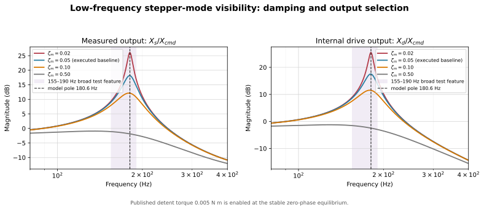
The global command-to-position model has a commutation-only pole of Hz, approximately
The executed \(\zeta_m=0.10\) is a provisional electromagnetic damping assumption. Stage motion has weaker participation in this mode than the internal drive coordinate, so output selection can hide the feature. The local detent tangent instead sweeps 136.93–193.63 Hz with microstep phase; this is a local sensitivity band, not an additional global spring.
F.2 Measurement evidence
The motor-excited chirps show a broad 155–190 Hz feature, but only the +1 kg up/down pair near 159–160 Hz cleared the report's local-floor criterion. Chirp normalization amplifies low-frequency noise, the second-pass impact analysis begins at 200 Hz, DitherV2 high-passes the range, and the fixed ~345 Hz feature was already flagged as probable chopper or measurement contamination. The data are compatible with the predicted 137–194 Hz band and 168 Hz pole, but do not identify detent phase or damping.
F.3 Representability and required extensions
The 2-DOF transfer matrix has only two mechanical modal pairs. The rebuilt ten-DOF plant adds internal modes but still cannot independently represent every reported 256, 345, or 1007–1044 Hz feature. Friction may shift or damp existing poles; it cannot create a missing coordinate.
| Observed feature | Present interpretation | Required action |
|---|---|---|
| 155–190 Hz broad response | overlaps the 168 Hz global pole and local detent-tangent sweep | repeat with matched input/output and identify driver damping |
| 256 Hz weak candidate | insufficient evidence for a new plant pole | repeat with a reliable mount |
| ~345 Hz fixed notch | likely chopper/ambient contamination | do not fit as a mechanical mode |
| 592–614 Hz impact and 685–700 Hz chirp bands | different boundaries and transfer functions; the relative mode is plausible | acquire co-located FRFs |
| 1007–1044 Hz PLA-mounted peaks | likely payload/bracket or sensor-mount compliance | add a coordinate only after a mode-shape or mass-loading test |
The minimum defensible extension order is: first match the measured transfer function; then add a grounded base/support coordinate if the weakly payload-dependent low feature remains; then add payload/bracket compliance for a confirmed ~1 kHz mode; then identify current-controller and motor damping dynamics. Transverse or rocking coordinates require cross-axis evidence. This is a representability limit, not justification for arbitrary fitted resonances.